前言：为什么 RAG 离不开向量数据库
经过了卷八的学习，你已经能够把“检索 + 生成”这套范式搭成一个最小可用的问答系统。代码也跑通了，效果也能看，但很快就会撞上一道隐形的天花板：当文档量从几十篇涨到几千、几万、几十万，当用户从一人内测变成百人并发，当延迟要求从“能等”变成“秒回”，内存里的暴力搜索就开始罢工——百万级向量就已经扫不动，千万级则彻底超时。卷八反复提到的“向量库”当时被当作黑盒使用，本卷的任务就是打开这个黑盒，让你看清里面到底装了什么、为什么有些库能撑住十亿级数据而有些库百万级就吃力、面对真实业务时该如何选型。
把整套手册的知识版图放在桌上，卷09 属于增强层第二根支柱。如果说卷八讲的是“检索的逻辑”，卷09 讲的就是“检索的引擎”。一个完整的 RAG 系统，文档解析与切分决定了“有什么”，嵌入模型决定了“怎么编码”，而向量数据库决定了“怎么又快又准地找出来”。三件事同等重要，但工程团队最容易低估的恰恰是最后一件——直到线上报出 P99 延迟飙升，或者某个查询场景全军覆没。
在 Agent 系统中，向量数据库的角色比 RAG 还要丰富一层。它是长期记忆的物理载体：Agent 把过去对话、执行轨迹、用户偏好向量化后存入库中，下次相似情境下检索复用；它是共享知识空间的协议层：多 Agent 协作时，一个 Agent 写入的经验能被另一个 Agent 通过检索消费；它甚至是“工具调用结果缓存”的天然去处：同一段被反复用到的资料只需一次检索，余下皆可命中缓存。理解向量库的内部机制，就理解了 Agent 系统记忆与知识层的大部分工程取舍。
本卷按“原理—算法—度量—融合—选型”五步展开。先把范式转移讲清楚：为什么“语义搜索”取代了“关键词搜索”成为新一代信息检索的基础设施；再钻入 ANN 索引的核心，理解 HNSW、IVF、量化这些概念的工程含义；随后讨论相似度度量与标量过滤的取舍，以及为什么“向量检索加 BM25”的混合搜索几乎成为生产系统的事实标准；最后用整整一章做横向对比与选型决策，把主流向量数据库放到同一张对照表里，让你带着实际业务数据能立刻动手。
学完本卷，你将能够：
- 讲清向量数据库与关系数据库的本质差异，并能向团队解释 RAG 与 Agent 为什么离不开它；
- 说出 HNSW、IVF、PQ、二进制量化这四类核心索引/压缩技术的原理与适用场景，并能在数据规模与延迟预算约束下选择合适的索引；
- 区分余弦、内积、欧氏三种相似度度量的数学含义与归一化陷阱，能为自家业务选出正确的距离度量；
- 讲出混合搜索的工程动机，理解 RRF 公式及其直觉，并能调出合理的 alpha 权重；
- 对主流向量数据库做横向对比，能依据数据规模、过滤需求、运维能力、成本约束画出一棵选型决策树。
向量与嵌入的原理已在卷03 讲解，本卷直接使用“文本可被编码为语义向量、距离近即语义近”这一结论；RAG 的检索范式与基础组件已在卷08 梳理，本卷只回顾必要的接口，重点放在“底层引擎”。评估指标部分与卷08 末尾的评估速览联动，详细的评估工程学留待卷15。
关于动手环境，本卷代码示例仅需一个 Python 环境与常用的向量库 SDK（Faiss、Qdrant、Milvus、pgvector 任选其一），不需要 GPU；性能基准的数字多为示意或引自公开材料，重在建立量级感。请带着业务中的真实数据规模来读——本卷最有价值的部分，往往是“在我这个数据量级下该选什么”这种问题的答案。
第一章 从关键词到语义：检索范式转移
1.1 关键词检索的天花板
在向量数据库登上舞台之前，互联网的搜索引擎与企业知识库几乎全部依赖关键词检索：把用户查询拆成词，与文档里的词做匹配，再按某种相关性公式（最经典的是 TF-IDF 与 BM25）排序。这套范式统治了二十多年，直到今天仍然是 Elasticsearch、Solr、PostgreSQL 全文检索的核心。然而它有三个与生俱来的天花板，每一个都指向同一个根本缺陷——它不理解语义。
第一个天花板是词汇不匹配。用户在搜索框输入“怎么注销账号”，而文档里写的是“用户主体注销流程”，关键词对不上就一无所获。对人类来说这两句话明显是同一件事，对关键词检索来说它们几乎毫无关系。同义词、缩写、说法不同都会让检索彻底失败。一个稍微复杂的查询里，用户的表述常常与文档的表述差之千里，而关键词检索对此无能为力。
第二个天花板是无法处理语义泛化。查询“如何为公司选向量数据库”，关键词检索只能找出包含这些字面词的文档，但真正有用的资料可能写在“从 Embedding 到大规模语义检索的工程实践”这种标题下——词面毫无交集，主题高度相关。这种“问得概括、答得具体”的场景，关键词检索几乎全军覆没。
第三个天花板是对结构化数据的笨拙。图片、音频、视频没有词可匹配；代码片段里的变量名、错误码、版本号都是“词”，但它们的语义信息极弱，靠字面频率排序毫无意义。当业务从“文档检索”走向“多模态检索”乃至“代码检索”，关键词检索就显得力不从心。
这三道天花板共同催生了“用向量找向量”的新范式：把查询和文档都编码到同一个高维语义空间，让“距离”度量“相似度”。从此“电脑”和“计算机”虽然字面不同，但在向量空间几乎重合；用户搜“以文搜图”，文字与图像也能在同一空间里相互定位。这是一次与“关系数据库取代层次数据库”同等量级的范式转移，理解它，是理解向量数据库的前提。
1.2 向量数据库是什么
给向量数据库一个工作定义：它是一类以高维向量为核心数据类型、以相似度查询为核心操作的专门数据库系统。它在内部把向量、原始数据、元数据三者绑定存储，对外暴露三类基本能力——写入（把向量连同元数据落入库中）、索引（构建可加速相似度查询的数据结构）、查询（给定查询向量，按距离返回最相似的 K 个向量及其关联数据）。这三步对应了向量库使用的三个阶段。
图1-1 把这趟「两次旅程」画了出来：写入是离线的苦活（切块、嵌入、建索引，做一次），查询是在线的快活（毫秒级响应，做千万次）。文档向量离线预计算，正是检索比大模型推理便宜几个数量级的根本原因——这张图值得在脑中常驻。
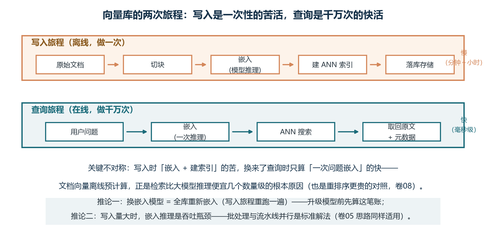
第一步是嵌入（Embedding）。利用嵌入模型把原始数据映射为固定维度的浮点向量。文本嵌入模型的代表有 OpenAI 的 text-embedding-3 系列（1536 与 3072 维）、开源的 BGE-M3（1024 维）、GTE-Qwen2 系列（千余维）、MTEB 排行榜上的各类新晋选手。图像嵌入的代表是 CLIP 与 SigLIP，代码嵌入的代表是 OpenAI text-embedding-3-code 与 StarCoder Embed。维度越高通常表达能力越强，但存储与计算成本同步上升。
第二步是存储与索引。原始 float32 向量连同元数据（文档标题、来源、权限、时间戳等）一起存入向量库；与此同时，向量库会在后台构建一种专门的数据结构——通常叫 ANN 索引——以避免查询时对全部向量做暴力扫描。这个 ANN 索引是向量库的核心引擎，也是本章后面要详细讨论的对象。不同的索引算法在召回率、内存占用、构建速度、查询延迟上各有取舍，对应了不同的应用场景。
第三步是检索。查询语句先经过同一个嵌入模型转成向量，再送入向量库；向量库用 ANN 索引快速找到与查询向量最相似的 K 个向量，返回这些向量的 ID 与绑定的元数据/原文。后续的排序、重排序、上下文组装交给上层 RAG 框架处理，向量库本身不负责生成。
这套范式解决了关键词检索天花板的三道题：它通过向量空间的连续性解决词汇不匹配；通过嵌入模型的语义编码解决语义泛化；通过统一的向量表示支持多模态与代码等非文本数据。向量库正是这套范式的物理实现，它与关系数据库、文档数据库、搜索引擎一起构成了现代数据基础设施的四大支柱。
1.3 在 RAG 与 Agent 系统中的位置
在 RAG 流水线中，向量库是“检索通道”的物理落点。文档离线索引通道把切分好的片段编成向量写入库中；在用户提问时，在线检索通道把问题向量送入库中，按相似度取出 Top-K 片段。这两条通道在向量库处汇合——离线通道决定库中“有什么、怎么组织”，在线通道决定“找得准不准、找得多快”。如果库中索引建得不好，在线通道召回的片段就不相关；即便索引完美，如果元数据设计有缺陷，过滤与权限隔离就会失败。向量库在 RAG 中的位置介于“内容资产”与“在线检索”之间，是两端的中枢。
在 Agent 系统中，向量库的角色还要宽得多。第一，它是长期记忆的物理落点。Agent 跨会话需要记住用户的偏好、项目的背景、过去的决策——把这些信息向量化后存入向量库，下一次相似情境中检索出来就能继续。第二，它是经验复用的天然去处。Agent 完成任务后可以把执行轨迹、踩过的坑、有效的工具调用组合存起来，未来遇到相似任务时检索先例，避免重新探索。第三，多 Agent 协作时，向量库常被当作共享知识空间：一个 Agent 写入的洞察能被其他 Agent 通过语义检索消费。第四，向量库也是“工具结果缓存”的好选择——同一段被反复用到的资料只需一次检索，余下皆可命中缓存，大幅降低重复 API 调用与延迟。
还可以把向量库放在卷一图1-4 六层技术栈中观察。它属于增强层，是 RAG、记忆、混合搜索、个性化推荐等上层能力的共同依赖。增强层之下的模型层提供了嵌入模型与生成模型，是向量库的“感官”；之上的编排层负责把检索结果组装成 Agent 的下一步行动。这种位置决定了向量库的选型与上层应用模式紧密耦合——不同的应用对召回率、延迟、过滤能力、规模上限的要求千差万别，没有“一库打天下”的银弹。
1.4 一个最小的端到端例子
为了把抽象概念钉在具体代码上，这里给出一个用内存版向量库跑通完整链路的最小例子。它只有二十几行，却把嵌入、存储、索引、检索四个动作全部覆盖，便于建立直观印象：
import numpy as np
from sentence_transformers import SentenceTransformer
# 1) 准备嵌入模型（这里用轻量开源模型，演示用）
model = SentenceTransformer("all-MiniLM-L6-v2") # 384 维
# 2) 离线索引：文档片段 → 向量 → 简单的“暴力索引”
docs = [
"向量数据库用于语义检索",
"HNSW 是常用的 ANN 索引",
"BM25 用于关键词匹配",
]
doc_vecs = model.encode(docs, normalize_embeddings=True) # 归一化
# 3) 在线检索：把问题转成向量，找最近的 K 个
def search(query: str, k: int = 2):
q = model.encode([query], normalize_embeddings=True)[0]
sims = doc_vecs @ q # 点积即余弦（向量已归一化）
top = np.argsort(sims)[::-1][:k]
return [(docs[i], float(sims[i])) for i in top]
print(search("什么是 ANN 索引"))走读这段代码，四步结构清晰可见。model.encode 把文本变成向量；doc_vecs 用一个二维数组“假装”是向量库；点积计算相似度；argsort 取 Top-K。它和上一节讲的三步范式一一对应：嵌入、存储、检索。生产中 doc_vecs 会被替换成真正的向量数据库，搜索函数会被替换成数据库的 query 接口，但抽象结构完全一致。建议读者把这段代码当成“向量库的极简实现”，当真正去用 Pinecone、Qdrant 或 Milvus 时，本质上就是把数组换成数据库、把点积换成库的查询接口而已。
1.5 评估指标：召回率、延迟、QPS
任何工程系统都要回答“怎样算好”，向量库的评估指标分四类：召回质量、排序质量、性能、资源。召回质量以 Recall@K 为核心：先用暴力搜索得到真实的 Top-K 近邻集合，再用 ANN 索引得到近似 Top-K 集合，两者交集与 K 的比值即为 Recall@K。工业实践中，Recall@10 达到 95% 通常被视为高质量检索的门槛。召回率只关心“是否命中”，不关心命中的顺序。
排序质量以 nDCG@K 为代表。它不仅看命中，还看命中结果排在第几位——排得越靠前得分越高。nDCG 适合有相关性等级标注（如“高度相关/一般相关/不相关”）的场景，在搜索推荐评测中广泛使用。同样的命中率下，nDCG 越高的系统用户体验越好，因为相关结果被排在了用户最先看到的位置。
性能指标包括 QPS（Queries Per Second，每秒查询数）和延迟分位数。QPS 反映系统吞吐能力，延迟通常用 P50、P95、P99 描述——P99 表示 99% 的查询延迟低于此值。生产系统更关注 P95/P99 而非平均值，因为长尾延迟会显著影响用户体验。需要注意的是 QPS 和 P99 延迟通常是此消彼长的关系：固定其中一个来比较另一个，结论才有意义。
资源指标包括内存占用、磁盘 I/O、索引构建时间、CPU/GPU 利用率。在数据规模增长时，内存成本往往是首要约束；索引构建时间影响数据导入效率与上线节奏。一个经验法则：每张卡 32GB 内存大约能装下 1 亿条 768 维 float32 向量（粗略估算）；如果用 PQ 量化压缩到 32 倍，1 亿条向量只需约 1GB 内存，成本差距惊人。
还有两个工程上极重要的概念：选择性（selectivity）与过滤召回率。选择性指满足过滤条件的文档占总文档的比例，它决定了过滤策略的难易——选择性越低，过滤越能缩小搜索空间，但也越容易破坏 ANN 索引的连通性；过滤召回率指在过滤条件下召回的 Top-K 与无过滤的暴力搜索相比的命中率，这是评估混合过滤能力的关键指标。这两个指标在第四章混合搜索与第五章选型决策中都会反复用到。
建议每个项目在选型初期就建立评测集与指标基线：准备 100 到 1000 条覆盖典型查询模式的样本，标注真实近邻或相关性等级；用同一组数据回归每一次参数调整、版本升级、数据库迁移。向量库的优化是“用数据说话”的典型场景，靠感觉调参数往往南辕北辙——这是从“演示品”走向“生产系统”的第一步。
1.6 从关键词到向量的范式转移小结
关键词检索与向量检索不是“你死我活”的替代关系，而是“不同问题用不同工具”的分工关系。关键词检索在精确匹配（型号、代码、人名、错误码）上仍然无可替代；向量检索在语义泛化、跨模态、概念关联上独占优势。生产系统的最佳实践几乎都是“混合检索”——向量通道加 BM25 通道并行召回，再用融合算法合并成一份排序，第四章将专门展开。理解了关键词检索的天花板与向量检索的优势，再去看任何具体向量数据库的能力与限制，就有了统一的坐标系。
第二章 ANN 索引算法详解
2.1 精确搜索为什么不可行
给定 100 万条 768 维 float32 向量，暴力搜索每次查询需要计算 1000 亿次浮点运算；10 亿条就要算 1 万亿次。线性扫描的复杂度 O(N×D) 决定了它在工业级数据规模下彻底不可接受。这就是近似最近邻（Approximate Nearest Neighbor，ANN）算法存在的根本理由：不要求找到绝对最近的邻居，而是找到“足够近”的邻居——以 Recall@10 95% 的精度换取几个数量级的速度提升。
在绝大多数应用场景中，“找到 95% 的真近邻”已经足够，因为后续往往还有重排序或大模型生成阶段进一步过滤。ANN 算法与“用近似换速度”的工程哲学一脉相承——它和数据库用 B+ 树替代线性扫描、用哈希索引替代全表查找一样，都是把“最准”替换成“又快又够准”的实用主义选择。本章将围绕 HNSW、IVF、量化三大类技术展开，它们是当前工业界事实上的三件套。
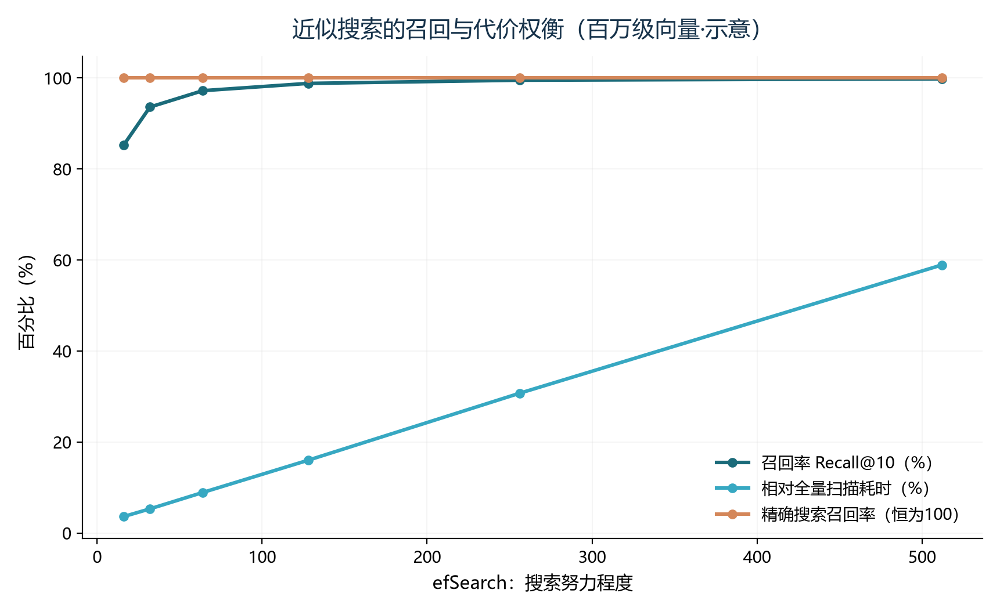
2.2 HNSW：图书馆的多层导览
HNSW（Hierarchical Navigable Small World，分层可导航小世界图）是 2018 年由 Malkov 与 Yashunin 提出的图索引算法，目前是工业界最主流的 ANN 实现，几乎所有现代向量数据库都把它作为默认索引。它有一个非常贴切的比喻可以帮你建立直觉。
把向量空间想象成一座巨大的图书馆，里面有几百万本书（每个向量就是一本）。最笨的方法是从入口出发一排排走——这是暴力扫描。稍微聪明点，你会去查目录卡，目录会告诉你某本书在哪个区——这相当于用哈希表索引。但图书馆真正的导览比目录更聪明：入口处有“总馆地图”，告诉你目标大致在哪个分馆；进分馆后有“楼层指引”，告诉你目标在第几层；进入楼层后有“书架标签”，最终精确定位到具体书架。HNSW 的多层图就是这个原理：顶层节点稀疏（相当于总馆地图），跳跃距离大（跨越大片区域），用于快速逼近目标区域；底层节点稠密（相当于书架标签），跳跃距离小，用于精确定位。
形式化地讲，HNSW 把 NSW（单层可导航小世界图）扩展成多层结构。每个新节点的最高层级 ℓ 由指数衰减概率分布决定：ℓ = floor(-ln(uniform(0,1)) · mL)，其中 mL = 1/ln(M)，M 为每个节点的最大连接数。以 M 等于 16 为例，约 93.75% 的节点只在最底层，约 6.25% 进入第二层，约 0.39% 进入第三层——大部分节点在底层“精耕细作”，少量节点在高层“跨区跳跃”，形成天然的“高速公路”效果。
查询从顶层入口点开始，每一层用贪心搜索（找到该层中离查询最近的节点），然后下到下一层继续；最底层用 beam search（保留 efSearch 个候选）返回最终的 Top-K。整个搜索的复杂度接近 O(log N)，百万级向量 P99 延迟通常在 10 到 30 毫秒。HNSW 还有一项精妙的工程设计：邻居选择采用启发式策略（select_neighbors_heuristic），优先选择“覆盖不同方向”的邻居，避免形成局部团簇，这是 HNSW 高召回率与全局连通性的关键。
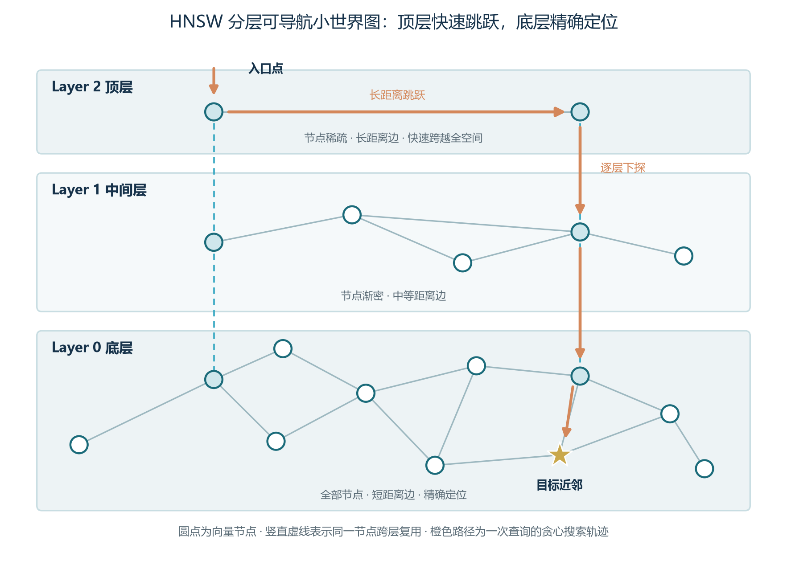
HNSW 有三个关键参数，决定了它的性能画像。第一个是 M（最大连接数）。M 越大图越稠密、召回率越高，但内存占用也线性上升。推荐范围：低维度（128 维以下）取 8 到 16；中等维度（128 到 768 维）取 16 到 32；高维度（768 维以上）或高召回要求可取 32 到 64。M 每增加一倍，索引内存大约增加一倍，这是它最大的成本杠杆。
第二个是 efConstruction（构建时搜索宽度）。它决定图的质量与构建时间，推荐 200 到 500。efConstruction 主要影响构建时间和图质量，对查询延迟影响很小。它一旦设定，构建完成后无法修改，因此构建前要拍板。
第三个是 efSearch（查询时搜索宽度）。这是查询性能的“旋钮”：它可以在不重建索引的情况下动态调整，通常设为 K 的 5 到 10 倍。efSearch 从 10 增加到 100，召回率可能从 85% 提升到 99%，但查询速度可能慢几十倍——这是用延迟换精度的经典权衡。生产中常见的做法是先用较大的 efSearch 离线评测确认召回率达标，再逐步调小到延迟可接受的水平。
2.3 IVF：图书馆的“分区阅览”
IVF（Inverted File Index，倒排文件索引）是另一种主流 ANN 算法。它借鉴了信息检索中倒排索引的思想：先用 K-Means 聚类把向量空间分成若干个簇（Voronoi Cell），每个簇维护一个倒排列表；查询时先找到离查询向量最近的若干个簇中心，再只在这些簇内做精确搜索。
继续用图书馆的比喻：HNSW 像多层导览图，IVF 像图书馆的分区阅览。先把所有书架按主题聚成十几个大区，每本书归到一个区；查询时先看属于哪个区，再去那个区找——而不是整馆搜。代价是“恰好被分到别的区”的书可能漏掉，因为聚类边界附近的真实近邻可能属于不同的簇。这被称为 Voronoi 边界问题，是 IVF 的固有缺陷。
IVF 有两个核心参数。第一个是 nlist（聚类中心数），通常取数据量的平方根——100 万向量取 1024，10 亿向量取 65536。nlist 过小，每个簇内向量太多，扫描代价高；nlist 过大，簇中心比较代价上升，且真实近邻可能落在 nprobe 之外的簇中。第二个是 nprobe（查询时扫描的簇数），是召回率与延迟之间的旋钮。nprobe 取 1 时只查最近的一个簇（速度极快但召回率可能跌破 80%），取 nlist 时退化为暴力搜索（100% 召回但最慢）。生产中通常用评测集选择“满足召回率目标的最小 nprobe”。
IVF 的优势是构建速度快、内存占用相对较小；劣势是召回率通常略低于 HNSW，且需要训练数据来得到聚类中心。对于静态数据、大规模离线检索、内存受限的场景，IVF 是更经济的选择。在实际工程中，IVF 经常和 PQ 量化配合（IVF_PQ 组合）：先用 IVF 分桶减少扫描范围，再用 PQ 压缩桶内向量，兼顾内存与速度——这是大规模离线检索最常用的组合拳。
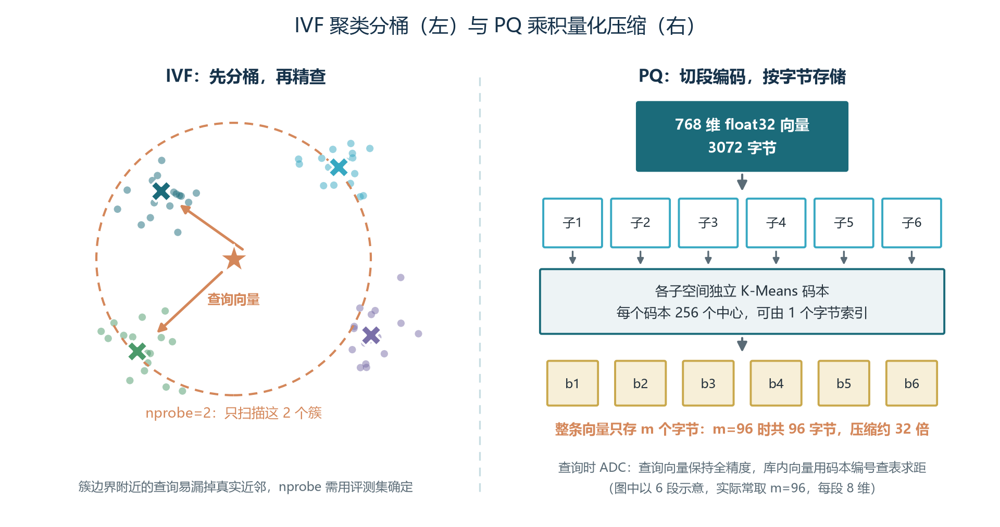
2.4 乘积量化 PQ：把向量“切碎”压缩
当向量规模从百万级迈向十亿级甚至百亿级，内存成本成为向量库落地的主要瓶颈。乘积量化（Product Quantization，PQ）是一种把高维向量压缩到极小体积的经典技术。它的基本思路是：把 D 维向量切分成 m 个子向量，每个子向量独立做 K-Means 聚类（通常 k 等于 256，每个子空间 8 位），最后每个向量用 m 个字节来近似表示。
以 768 维向量为例，原始 float32 存储需要 3072 字节；使用 PQ 压缩（m 等于 96），每个向量只需 96 字节，压缩比高达 32 倍。10 亿条向量从 3 TB 压到 30 GB——这是十亿级数据能装进内存的关键。代价是引入量化误差，召回率通常会下降几个百分点，需要配合 rescoring（重打分）或扩大候选集来恢复。
PQ 查询时采用 ADC（Asymmetric Distance Computation，非对称距离计算）：查询向量保持全精度，数据库向量用 PQ 码近似，通过查表快速计算距离。具体做法是先预计算一个 m × k 的查找表（LUT），每个库内向量只需 m 次查表与 m-1 次加法就能算出距离，比对原始向量的 768 次乘加快一个数量级。SDC（Symmetric Distance Computation）把查询向量也量化，速度更快但精度更低，一般只在极端性能要求下使用。
朴素 PQ 的距离估计是无偏的（均值准确），但方差较大。近两年的研究提出了多项改进：RaBitQ（SIGMOD 2024）通过随机旋转和校正标量提供理论误差界；TurboQuant（Google 与 Qdrant 联合）使用 Hadamard 旋转和 Lloyd-Max 标量码本，在 1-bit 量化下召回率比原始 BQ 高 9 到 24 个百分点。这些新方案让 PQ 在超大规模场景下变得更可靠。
2.5 二进制量化 BQ：32 倍压缩的另一条路
二进制量化（Binary Quantization，BQ）是目前最激进的压缩方式：只保留每个浮点数维度的符号位（正为 1，负为 0），把 32 位 float 压缩为 1 位，实现 32 倍压缩。二进制量化后的向量用汉明距离（Hamming Distance）衡量相似度，计算时通过 XOR 操作加 POPCNT 指令快速完成——现代 CPU 的 POPCNT 指令在一个时钟周期内可处理 64 位，768 维二进制向量的距离只需 12 条 POPCNT 指令，速度惊人。
朴素的二进制量化对向量分布有要求：最适合零均值、各向同性（isotropic）的嵌入模型，例如 OpenAI text-embedding-ada-002、Cohere v3。如果向量分布有偏，符号位会丢失太多信息，召回率可能跌至 80% 以下。因此 BQ 几乎从不单独使用，而是作为两阶段搜索的第一阶段：先用二进制索引快速召回 10 倍于目标 K 的候选集，再用原始 float32 向量对候选集重排序。这样既享受 32 倍压缩带来的内存红利，又通过 rescoring 恢复了精度。
实验数据表明，10 倍过采样可以恢复大部分召回率损失；如果召回率要求更高，可以增大到 50 倍甚至 100 倍。生产中常见的做法是：用 BQ 做第一阶段，召回 10×K 候选；再用全精度索引做第二阶段，精排出最终的 K 条。整个流水线的延迟与单阶段 HNSW 接近，但内存占用降了一个数量级。
2.6 其他索引与 GPU 加速
除了 HNSW、IVF 和量化技术，还有几类值得了解的索引算法。
LSH（Locality-Sensitive Hashing，局部敏感哈希）通过哈希函数将相似向量映射到同一个桶中。它的查询速度极快，适合对实时性要求极高的场景如直播内容审核；但召回率波动较大、精度相对较低，在现代向量数据库中已较少使用。
DiskANN 是一种面向磁盘优化的图索引。它通过压缩向量和将图结构存储在 SSD 上，实现了在内存受限情况下搜索亿级向量。Milvus 和 Faiss 都支持 DiskANN 相关技术，适合“内存不够但又要查十亿级”的场景。
GPU 索引利用 CUDA 的并行计算能力加速距离计算与聚类。Faiss 的 faiss-gpu 可以把 IVF 加 PQ 的查询速度提升 10 倍以上；Milvus 2.5 以上也支持 GPU 加速索引，适合对吞吐量要求极高的离线批处理场景。GPU 索引的代价是显存成本与冷启动延迟，对在线实时查询并不总是最优。
还有 ScaNN（Google 的随机分区树）、SPANN（微软的空间分区近似最近邻）等近年提出的索引算法，它们在不同维度与数据分布下各有优势。在选型阶段，建议用主流的 HNSW 或 IVF 作为基线，把这些新算法作为“优化候选”——先确认业务瓶颈，再针对性引入。
2.7 HNSW vs IVF 的选型决策
现实工程中，HNSW 与 IVF 的选择几乎能涵盖 80% 以上的场景。两者对比如下表所示：
| 对比维度 | HNSW | HNSW 与 IVF 关键维度对比（HNSW 列） | HNSW 与 IVF 关键维度对比（IVF 列） |
|---|---|---|---|
| 索引结构 | 多层图结构，节点跨层互连 | 多层小世界图，逐层下探 | 聚类分桶加桶内搜索 |
| 推荐规模 | 百万到十亿 | 百万到十亿 | 百万到百亿 |
| 召回率 | 较高，通常 > 95% | 较高，通常 > 95% | 中等，取决于 nprobe |
| 查询速度 | 极快，图遍历对数复杂度 | 极快，适合在线查询 | 快，受 nprobe 控制 |
| 内存占用 | 较高，约为原始向量 1.5 到 3 倍 | 较高 | 相对较低，结合 PQ 可更低 |
| 构建速度 | 较慢，逐点建图 | 较慢 | 较快，只需 K-Means 训练 |
| 动态更新 | 支持增量插入 | 支持 | 需要重新训练或增量维护 |
| 典型场景 | RAG、语义搜索、推荐系统 | RAG、语义搜索、推荐系统 | 企业知识库、大规模日志检索 |
选型经验法则可以浓缩成一句话：动态更新多、要求在线查询、内存预算允许，选 HNSW；数据规模超十亿、内存硬约束、构建一次查很久，选 IVF 或 IVF_PQ。两者也可以组合——例如用 HNSW 索引聚类中心（IVF_HNSW），既保留 IVF 的分桶能力又获得 HNSW 的快速定位能力。Faiss 的 IVF_HNSW、Milvus 的部分索引都支持这一组合。
第三章 相似度度量与标量过滤
3.1 余弦、欧氏、内积的物理意义
向量库如何衡量两个向量的相似程度？最常用的有三种度量方式：余弦相似度（Cosine Similarity）、欧氏距离（Euclidean Distance）和内积（Inner Product）。理解它们的区别，对选择索引参数与距离度量至关重要——选错度量，相当于在错误的坐标系下做检索，结果自然是错位的。
余弦相似度衡量两个向量夹角的余弦值，关注的是向量的方向而不是绝对长度。如果两个向量已经做过 L2 归一化（每个向量除以自己的模长，使其长度为 1），那么它们的模长都等于 1，余弦相似度与内积在数学上等价。余弦相似度特别适合文本语义检索，因为主题相同但长度不同的文档，其方向往往接近——一篇 200 字和一篇 2000 字的文章可能表达同一个主题，余弦相似度会认为它们很相似。
欧氏距离衡量两个向量端点之间的直线距离，同时考虑方向和长度。它对向量的尺度敏感：在图像检索、生物特征识别等场景中，如果向量长度本身携带信息（例如图像的特征强度），欧氏距离往往更准确。一个直观的例子：两幅几乎相同的图像，欧氏距离应该非常小；两幅差异很大的图像，欧氏距离会显著增大。欧氏距离在“人脸识别”“图像检索”这类应用中是默认选择。
内积即点积，计算速度极快。对于已归一化向量，它等价于余弦相似度；在未归一化的情况下，内积会偏向长度更大的向量。推荐系统中常用内积，因为它需要同时捕捉相似性和用户偏好强度——一部用户强烈偏好的电影，即使不完全相似，也可能因为“偏好强度”而排在前面。
图3-1 用两张几何草图把度量的直觉画了出来。记忆口诀：余弦比方向——两支箭头张角越小，主题越接近，一篇短评与一篇长文谈同一件事也会被判相似；欧氏比位置——不仅看方向还看两点离多远，长度差异会被计入。文本检索关心的大多是「说的是不是一回事」，所以默认选余弦；这也解释了下一节的归一化技巧：把向量长度统一归一后，余弦与内积数学等价，兼得两种语义。
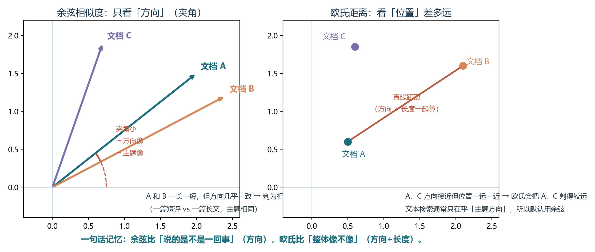
还有一种度量是汉明距离，主要用于二进制量化后的向量。它衡量两个等长二进制串之间不同位的数量，对应的是 XOR 加 POPCNT 指令，速度最快但精度最低，常用于第一阶段粗排。
| 度量方式 | 核心思想 | 是否考虑长度 | 排序方向 | 典型适用场景 |
|---|---|---|---|---|
| 余弦相似度 | 向量夹角的余弦 | 否 | 越大越相似 | 文本语义检索、文档分类 |
| 欧氏距离 | 向量端点的直线距离 | 是 | 越小越相似 | 图像检索、生物特征识别 |
| 内积 | 对应元素相乘求和 | 是 | 越大越相似 | 推荐系统、未归一化向量 |
| 汉明距离 | 二进制向量不同位的数量 | 是 | 越小越相似 | 二值化向量、LSH、图像指纹 |
3.2 归一化陷阱与度量选择
一个在工程中极容易踩的坑是归一化陷阱。许多嵌入模型默认输出已经做过 L2 归一化，此时余弦相似度和欧氏距离在数学上等价；但并非所有模型都归一化。例如某些图像模型或推荐模型会保留向量长度信息，此时如果强行使用余弦相似度，可能会丢失重要信息。
选度量时的实用步骤是：第一，查阅嵌入模型的文档，确认是否归一化；第二，如果已归一化，用余弦或内积均可（内积计算略快）；如果未归一化，根据业务目标选择——文本语义检索选余弦，图像识别选欧氏，推荐召回选内积；第三，在评测集上验证所选度量的实际效果，不能假设“名字对就效果对”。
另一个需要注意的点是不同向量库对距离度量的命名差异。pgvector 的 <=> 表示余弦距离（越小越相似），<-> 表示 L2 距离，<#> 表示负内积；Pinecone 的 metric 参数可以是 cosine、dotproduct、euclidean；Milvus 的 metric_type 可以是 L2、IP、COSINE。在迁移或对比时，必须仔细核对语义——一个常见的事故是开发者以为“选了 cosine”，但实际效果与 cosine 完全不同，最终召回的全是噪声。
还有一条经验：选度量不仅是技术问题，也是工程问题。如果团队的代码已统一使用某种度量，迁移到新库时应当保持度量一致——例如 pgvector 的 <=> 与 Pinecone 的 cosine 输出排序一致，可以直接互译；如果中途换度量，所有历史索引都要重建，迁移成本极高。
3.3 标量过滤的三种实现策略
在真实生产环境中，几乎没有“只按向量相似度搜索”的场景。更多时候，查询需要同时满足业务条件：“只搜索 2024 年之后发布的文档”“只搜索品牌为 Apple 的商品”“只搜索用户有权限查看的内容”。这些条件叫标量过滤（Scalar Filtering）或元数据过滤（Metadata Filtering）。标量过滤与向量检索的结合有三种主流策略：后过滤、预过滤、单阶段过滤。
后过滤（Post-filtering）最简单：先按向量相似度搜索出 Top-K，再过滤掉不符合条件的结果。优点是实现简单、对 ANN 索引无侵入；缺点是结果数量不可控——如果过滤条件很严格，可能返回空或少于 K 条。例如搜索 Top-100 后再过滤，如果只有 2 条满足条件，就只能返回 2 条。
预过滤（Pre-filtering）则先通过 B 树、倒排索引等找到满足条件的文档集合，再在这个子集上做向量搜索。优点是所有返回结果都满足条件；缺点是当过滤条件很严格时，候选集很小，可能破坏 HNSW 图的连通性，导致搜索效率急剧下降甚至退化为暴力扫描。
单阶段过滤（Filterable HNSW）是现代向量库的核心方案。它在 HNSW 图遍历过程中同时评估过滤条件，并预先将符合同一过滤值的节点组织成子图，保证过滤后的连通性。Qdrant 的 Filterable HNSW、Pinecone 的元数据过滤、Weaviate 的 ACORN 算法、pgvector 的迭代扫描都采用了类似思路。
选择何种过滤策略，取决于过滤选择性（selectivity）：满足条件的文档占总文档的比例。当选择性很低（如 1%）时，预过滤和单阶段过滤优势明显，因为暴力搜索的小集合足够快；当选择性很高（如 80%）时，后过滤可能更简单有效，因为几乎全部向量都会保留。三种策略在过滤选择性变化时的性能曲线，是选型的关键依据。
3.4 元数据设计最佳实践
元数据是向量库的“身份证系统”，它伴随每个向量入库与查询的全生命周期。常见字段包括：来源文档标识与文件名、文档标题与章节路径、页码或位置索引、文档类型与业务标签、创建与更新时间、密级或权限范围、用户标签或个性化字段。这些字段在三个环节持续发挥价值。
检索环节，元数据支持过滤：用户问“去年的报销制度”时，先用时间字段滤掉旧版本文档再相似度检索，避免过时内容抢占名额；企业场景中按部门与密级过滤，是实现权限隔离的第一道闸。生成环节，元数据支撑溯源：回答里的每条引用能回指到文档名与页码，用户才敢相信。运维环节，元数据支撑治理：文档更新时按来源标识定位并替换旧片段，知识库的增量更新与回滚都靠它。
元数据的设计有几个常见误区。第一，把所有信息都塞进元数据。元数据是结构化字段，应该只放会被查询的过滤条件与权限信息；其他内容应放在原始文档或向量本身的邻接字段里。第二，元数据字段命名混乱。命名应当遵循一致的规范（如 snake_case 或 kebab-case），并有清晰的字典说明——一旦命名混乱，跨系统迁移时就会变成数据清洗的噩梦。第三，不为高频过滤字段建索引。元数据字段在向量库中通常默认建索引，但部分库（如早期 Milvus）需要显式声明；高频过滤字段不建索引会导致过滤性能急剧下降。
元数据的权限设计是一个独立话题。对于多租户 SaaS，常见的做法是每个租户独立的 collection 或 partition，隔离性好但资源开销大；另一种是所有租户共享一个索引，用 tenant_id 字段过滤，成本低但需要注意权限隔离。前者适合大客户，后者适合中小客户混合。设计元数据时一定要考虑未来权限模型的演进——一旦上线，修改权限字段的成本极高。
第四章 混合搜索工程：稠密向量、稀疏向量与 BM25
4.1 为什么需要混合搜索：两种"检索语言"的互补
向量检索擅长语义，却有清晰的盲区：精确记号。用户问"产品编号 A-1007 的保修期"，文档里白纸黑字写着 A-1007，但这个编号的嵌入向量与问题向量未必接近——嵌入模型把文本映射到语义空间，而编号恰恰是语义最稀薄的文本。罕见术语、型号、人名缩写、错误代码、代码片段，全是向量检索的滑铁卢。
要真正理解"为什么要混合"，先得看清一件事：检索本质上是用一种"表示"去描述文本，再用数学比较这些表示。同一篇文档可以有两种截然不同的表示方式。一种是稀疏向量（sparse vector）：把文本表示成"词表上的一份权重清单"——每个词占一个坐标，没出现的词权重为零；BM25 就是这种表示最经典、至今最强的打分函数。另一种是稠密向量（dense vector）：用嵌入模型把文本压成几百到几千个连续小数，每一维没有人类可读的含义，但整体编码了语义。两种表示的"看不见的地方"恰好互补：稀疏向量看不见同义与改写，稠密向量看不见精确记号。混合搜索（Hybrid Search）的本质，就是让两套坐标系统并行工作、再把两路候选合并成一个排名。
所以本章的编排是"先造弹药、再讲打法"：4.2 节讲透稀疏向量（以及它和倒排索引的关系），4.3 节把 BM25 的公式逐项拆开并完整手算一遍，4.4 节讲透稠密向量，4.5 节介绍试图"两者兼得"的学习式稀疏向量，4.6 节给出三者的总对照与选型；从 4.7 节起进入融合工程（RRF、权重调优与落地案例）。生产系统的经验是：纯向量检索在"长尾查询"上召回率往往低于 70%，混合搜索能把它抬到 90% 以上。
BM25 用"词"打分（精确、零训练、可解释）；稠密向量用"语义"打分（泛化强、精确记号弱）；学习式稀疏向量想两者兼得（仍是词表坐标，但权重是学出来的，还能自动扩展同义词）。三者的坐标系统完全不同——这正是它们互补、而不是互相替代的原因。
4.2 稀疏向量：以词表为坐标系
先把"向量"这个词降级理解：任何一串有序的数字都是向量。检索里的稀疏向量，是把一篇文档表示成"词表长度"的一串数字：假设你的词表有 3 万个词，每篇文档就是一个 3 万维的向量，第 j 维的值是"第 j 个词在这篇文档里的权重"。文档里没出现的词，权重为零——一篇文章撑死用到几百个词，3 万维里 99% 以上都是 0，所以叫稀疏向量。维度由词表决定（3 万到 25 万不等），"每一维对应哪个词"是人为约定、完全可读的。
用一个最小例子看清它的工作方式。词表只有四个词：[退款, 政策, 发票, 流程]，几篇文档被切成词并赋予权重后，就变成了下面这样一组稀疏向量：
| 文档 | 文本（已分词） | 退款 | 政策 | 发票 | 流程 |
|---|---|---|---|---|---|
| D1 | 退款 政策 | 0.8 | 0.9 | 0 | 0 |
| D2 | 退款 流程 | 0.7 | 0 | 0 | 0.6 |
| D3 | 发票 政策 | 0 | 0.9 | 0.8 | 0 |
查询"退款"被编码成 [1, 0, 0, 0]，检索就是算"查询向量与文档向量的内积"（分数越高越相关）：D1 得 0.8、D2 得 0.7、D3 得 0。内积在稀疏向量上有一个漂亮的等价物——只有双方都非零的维度（共同的词）才贡献分数，所以实际计算不需要真的乘 3 万次，只需要沿着"查询里的词"去查。这正是倒排索引（inverted index）高效的原因：倒排表记录"每个词出现在哪些文档里"，查询时只顺着查询词去取候选，与词表大小无关。Elasticsearch、Lucene、PostgreSQL 全文检索能毫秒级响应，靠的就是这套结构。
那么权重从哪里来？最经典的一族公式是 TF-IDF：一个词在文档里出现越多（TF，词频）越重要；但同时，在整个语料库里越常见（DF，文档频率）的词越不重要——"的"到处都是，含它等于什么都没说，而"退款"只在少数文档出现，一旦出现就是强信号。IDF 就是"给罕见词抬高、给常见词压低"的那部分权重。BM25 就是 TF-IDF 的现代化改良版：保留完全相同的"稀疏坐标 + 词权重 + 内积打分"结构，只把词频与文档长度这两件事处理得更精细。换句话说，BM25 检索与向量检索并不是两种平行的东西——BM25 就是一种"权重给定、坐标可读"的向量检索。
稀疏向量的性格可以总结成一张清单。可解释：非零项就是原文的词，任何一次命中都能拆成"命中了'退款'，贡献 0.61 分"；对精确记号天生敏感：编号 A-1007、错误码 E502、人名缩写，只要字面出现就命中，不存在"语义模糊"；零训练成本：统计语料即可建立，新领域开箱即用，新增文档只要统计词频就能入索引；不懂同义与改写："注销账号"和"用户主体注销流程"字面对不上，得靠人工同义词词典搭桥；依赖分词：中文尤其明显——"退款政策"切成"退款/政策"还是"退/款/政/策"，直接决定检索效果，分词器就是稀疏检索的"嵌入模型"。
4.3 BM25 完全解析：公式的每一项都在解决什么问题
上一节说 BM25 是"TF-IDF 的现代化改良版"。它到底改良了什么？把公式摊开看，每一项都对应一个朴素的直觉，没有一处是凭空设计的。主流实现（Lucene / Elasticsearch / PostgreSQL 全文检索 / 各向量库的 BM25 支持）采用的公式如下：
score(q, d) = Σ IDF(t) · [ f(t,d)·(k1+1) / ( f(t,d) + k1·(1 − b + b·|d|/avgdl) ) ]
t∈q
其中：
IDF(t) = ln( 1 + (N − nt + 0.5) / (nt + 0.5) ) （Lucene 平滑版本）
f(t,d) = 词 t 在文档 d 中出现的次数（词频 TF）
|d| = 文档 d 的长度（词数）；avgdl = 语料库平均文档长度
N = 语料库文档总数；nt = 含词 t 的文档数（文档频率 DF）
k1 = 词频饱和参数，常用 1.2 ～ 2.0
b = 长度归一化强度，常用 0.75（0 = 不归一化，1 = 完全归一化）
(k1+1) = 与排序无关的常数项（很多实现直接省略，不影响名次）逐项拆解这三个"零件"。① IDF（逆文档频率，Inverse Document Frequency）——罕见的词更值钱。 一个词出现在越少的文档里，它出现时提供的区分度越高：如果 100 万篇文档里"退款"只出现在 200 篇，那么某文档含"退款"就是强证据；"的"出现在 99% 的文档里，含它等于什么都没说。IDF 把这个直觉写成对数：罕见词的 IDF 高，常见词的 IDF 趋近于零。"政策"比"退款"更罕见时，"政策"的一次命中就比"退款"的一次命中更值钱——马上可以看到算例验证这一点。② TF 饱和——第二次出现不如第一次值钱。 公式里词频不是"乘上去"，而是走 f/(f+K) 这条饱和曲线：词频从 0 到 1 是质变（从"没有这个词"到"有"），从 1 到 2 还有明显增益，从 20 到 21 几乎无感。这正是"主题词出现一次已说明问题，重复 20 次不代表重要性大 20 倍"的数学化。k1 控制饱和的快慢与上限：k1 越大，重复出现的词还能持续加分，饱和上限（k1+1）越高；k1 越小，第一两次出现几乎就吃满了权重。③ 长度归一化——长文档天然占便宜，要打折。 一篇 5000 字的文档比 50 字的文档"撞上"查询词的概率大得多，不惩罚的话检索结果会被长文档霸榜。b 就是惩罚强度：把文档长度与平均长度的比值放进分母，b=0 完全不惩罚，b=1 完全按比例惩罚，0.75 是工业界多年积累的默认起点。
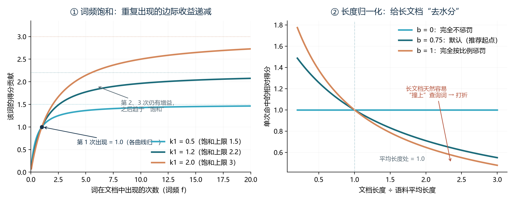
光看公式还不够。跑一个完整的手算例子，你就彻底掌握了。语料库共 5 篇文档（假设已分词），查询为"退款 政策"：
| 文档 | 内容（已分词） | 长度 | "退款"次数 | "政策"次数 |
|---|---|---|---|---|
| D1 | 退款 政策 说明 | 3 | 1 | 1 |
| D2 | 退款 流程 与 到账 时间 | 5 | 1 | 0 |
| D3 | 会员 政策 与 积分 规则 | 5 | 0 | 1 |
| D4 | 发票 与 报销 说明 | 4 | 0 | 0 |
| D5 | 退款 到账 说明 | 4 | 1 | 0 |
先算基础统计：N=5，平均长度 avgdl =（3+5+5+4+4)/5 = 4.2。"退款"出现在 D1、D2、D5 共 3 篇，代入 IDF 公式得 IDF(退款) ≈ 0.539；"政策"出现在 D1、D3 共 2 篇，IDF(政策) ≈ 0.875——"政策"比"退款"更罕见，所以单次命中更值钱。取 k1=1.2、b=0.75，逐篇计算如下表（数字四舍五入）：
| 文档 | 长度因子 K | "退款"贡献 | "政策"贡献 | 总分 |
|---|---|---|---|---|
| D1 | 0.943 | 1.132×0.539 ≈ 0.610 | 1.132×0.875 ≈ 0.991 | ≈ 1.601 |
| D2 | 1.371 | 0.928×0.539 ≈ 0.500 | 0 | ≈ 0.500 |
| D3 | 1.371 | 0 | 0.928×0.875 ≈ 0.812 | ≈ 0.812 |
| D4 | 1.157 | 0 | 0 | 0 |
| D5 | 1.157 | 1.020×0.539 ≈ 0.550 | 0 | ≈ 0.550 |
最终排名：D1（1.601）> D3（0.812）> D5（0.550）> D2（0.500）> D4（0）。三个名次背后的道理值得逐一咀嚼。D1 同时命中两个词，两个词的贡献直接相加，毫无悬念第一。D3 只命中"政策"，却排第二、超过了命中"退款"的 D5——因为"政策"更罕见，单次命中含金量更高，这是 IDF 在起作用。D5 与 D2 都只命中"退款"，D5 更短所以得分更高——长度归一化让"简洁命中"战胜"冗长命中"，这是 b 在起作用。至于 D4，两个词都没有，得分 0，被彻底排除。这就是 BM25 的全部秘密：用 IDF 奖励罕见词，用饱和曲线驯服词频，用长度归一化压制长文档——三个零件、各管一个朴素直觉。
为什么这个 1994 年定型的公式至今难以被简单替代？四个理由。零训练成本：只要有语料统计就能跑，新领域开箱即用、冷启动极快；可解释：每一次得分都能拆成"哪个词贡献了多少"，推荐理由与失败归因都能讲清；对精确记号无死角：编号、错误码、罕见专名，字面命中即得分，而这些正是稠密向量的重灾区；极致的性价比：倒排索引几十年工程优化，毫秒级响应、内存占用极低。它的短板同样明确：词表就是边界——查询与文档没有共享词时得分为 0；"注销账号"匹配不上"用户主体注销流程"，更不可能跨越到"关闭账户"这类同义改写。而这些缺口，正是稠密向量的战场。
4.4 稠密向量：以语义为坐标系
稠密向量换了一套坐标系：不再"一词一维"，而是用嵌入模型把文本压缩成几百到几千个连续小数（常见 384 / 768 / 1024 / 1536 / 3072 维）。与稀疏向量相反，它几乎每一维都是非零的小数，但没有任何一维对应"退款"或"政策"这样的具体词——每一维是模型训练出来的抽象语义特征，人类无法直接解读。它的工作方式可以概括成一句话：模型被训练成"语义越接近的文本，向量距离越近"（这个训练目标的来历，本节末尾会用一段话点透；嵌入的完整原理在卷03）。
稠密向量的性格与稀疏向量几乎处处互补。强在泛化：查询"怎么注销账号"能匹配文档"用户主体注销流程"（同义改写）；"台式机开不了机"能匹配"主机无法启动的排查步骤"（口语对书面）；训练语料足够丰富时甚至能跨语言——"退款"与"refund"可以进入同一语义邻域。弱在精确：编号 A-1007、错误码 E502、版本号 v2.7.1 这类"语义稀薄的记号"，嵌入模型往往把它们编码成一团模糊的"某种编号"——不同编号的向量彼此非常接近，谁是谁区分不开，这是稠密检索最经典的失手现场。罕见专名与新词同样吃亏：嵌入空间是训练语料的切片，语料里没有过的词，空间里就没有它的位置。此外还有一类隐蔽的失败：长尾查询——大量低频、拼写各异的真实查询，其向量落在语料稀疏区域，召回质量显著下滑（这正是 4.1 节"召回率低于 70%"的来源）。
工程特性也要和稀疏向量对照着看，因为它们决定了成本结构。存储：稠密向量每一维都要存（1536 维 × 4 字节 ≈ 6 KB/条，百万级文档即 6 GB 起步），且必须配 ANN 索引（HNSW / IVF，见第二章）；稀疏向量只存非零项（每篇文档几百个"词-权重"对），体积通常小一个数量级，索引就是倒排表。写入与更新：新增文档时，稀疏表示只需统计词频（毫秒级，CPU 即可）；稠密表示必须跑一遍嵌入模型（有 GPU 或网络成本），而且模型换代意味着全库重嵌入——这是稠密检索最容易被低估的运维负担。查询成本：稀疏查询的分词加倒排查找近乎免费；稠密查询每次都要先嵌入查询文本（一次模型推理，几十毫秒起步）再走 ANN 搜索。可解释性：稀疏能指出"命中了哪个词、贡献多少分"，稠密只能说"语义相近"——推荐理由、审计与失败归因因此都更难讲清。
最后回答一个关键问题：稠密向量凭什么"懂"语义？ 这是理解一切的钥匙。嵌入模型训练时看过海量"语义相近的文本对"（问答对、翻译对、同一段落的两个句子、搜索点击对），训练目标就是让这些文本对的向量彼此靠近、无关文本彼此推远。模型从这个目标里自行学出了"语义坐标系"——同义、上下位、因果、情感倾向，都被编码成了空间里的方向与距离。所以稠密向量的"理解"不是魔法，而是大规模配对数据上的统计结果。这也正好解释了它的两类失手：训练分布之外（生僻编号、新造专名）立刻失效；长尾区域（稀有表述）数据稀疏、坐标不准。理解了这个来历，"稠密擅长什么、不擅长什么"就不再需要死记——它只是训练数据的镜像。
4.5 学习式稀疏向量：试图"两者兼得"的第三条路
稀疏向量有精确性和效率，稠密向量有语义泛化——能不能造一个"结构仍然稀疏、但权重是学出来的"的中间态？可以。这就是学习式稀疏向量（Learned Sparse Retrieval），代表方法是 SPLADE（SParse Lexical AnD Expansion）。
机制值得说清楚：SPLADE 用一个小型神经模型（BERT 类）读入文本，对词表上的每一个词输出一个权重，然后做稀疏化（绝大多数词置零，只保留少数高权重词）。关键就在被保留的那少数词里：不仅有原文出现过的词，还可能有语义相关的扩展词——模型在训练中自动学会了"描写退款时，也给'退货'这个词一点权重""写'注销账号'时，给'账户'与'关闭'一点权重"。于是输出仍然是一份"词表权重清单"（稀疏、可放进倒排索引、可解释），但检索时连"文档里没写出来的同义词"也能被命中——它把 BM25 缺失的语义扩展补齐了，同时保留了稀疏结构的全部工程优势：倒排索引的速度、低内存、以及"能指出是哪个词贡献的分数"。
图4-3 用「便签自动补同义词」把 SPLADE 讲透：BM25 的便签只写原文出现过的词，查询换个说法就完全失手；SPLADE 的便签由模型自动补上「没写但相关」的词——仍是词表坐标、仍走倒排索引，但语义扩展已经自动完成。
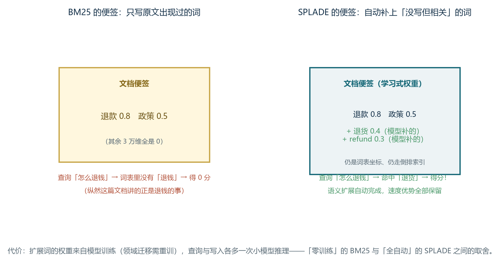
工程现状：SPLADE / SPLADE++ / SPLADE-v3、BGE-M3 的稀疏输出、Elasticsearch 的 Learned Sparse（ELSER）是这条路线的主要玩家；向量库侧也在跟进——Milvus 2.5 起提供内置 BM25 函数与稀疏向量字段，Qdrant 支持稀疏向量索引（可搭配 BM25 或学习式权重），Weaviate 在同一套 API 里就能建"稠密 + 稀疏"双通道。代价是：查询与写入各多了一次神经模型推理（成本高于纯 BM25，接近稠密嵌入）；扩展词的权重依赖训练分布，领域迁移时需要重新训练或微调——这是它与"零训练"的 BM25 最大的工程差别。一句话选型：语料就一个领域、又想要语义扩展、又舍不下倒排索引的速度，SPLADE 值得评估；否则先用 BM25 打底、稠密向量补语义，是更稳的默认组合。
4.6 三种表示的对照与选型
把前三节的知识收进一张表，这是本章最重要的一张速查：
| 维度 | 稀疏向量（BM25） | 学习式稀疏（SPLADE 等） | 稠密向量 |
|---|---|---|---|
| 坐标含义 | 词表中的词，可读 | 词表中的词 + 语义扩展项，可读 | 抽象语义维度，不可读 |
| 典型维度 | 3 万～25 万（词表大小） | 同左 | 384～3072 |
| 非零比例 | 极低（通常 <1%） | 极低 | 接近 100% |
| 打分方式 | 词权重内积（BM25 公式） | 学习权重内积 | 余弦或内积 |
| 同义与改写 | 弱（需同义词词典） | 较强（自动扩展） | 强 |
| 编号/代码/数字 | 强（字面命中） | 强（保留词表坐标） | 弱 |
| 训练需求 | 无（纯统计） | 需要（神经模型） | 需要（嵌入模型） |
| 索引结构 | 倒排索引 | 倒排索引 | HNSW / IVF 等 ANN |
| 查询端开销 | 极低（分词 + 查表） | 一次小模型推理 | 一次嵌入推理 + ANN 搜索 |
| 更新与重建 | 成本最低 | 中（需重算权重） | 中（需重嵌入，模型换代则全库重来） |
| 可解释性 | 强（词级归因） | 中（可见扩展词） | 弱 |
| 典型实现 | Lucene / ES / PG 全文检索 | SPLADE、BGE-M3 稀疏、ELSER | OpenAI / BGE 等稠密嵌入 |
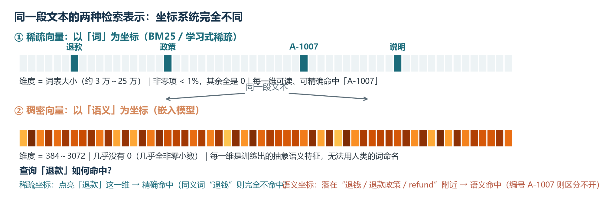
选型因此变得简单：默认不做三选一，而是分层组合。第一层用 BM25（或学习式稀疏）打底——它对精确记号与罕见词的召回不可替代，成本又最低；第二层用稠密向量补齐语义泛化，召回那些"用词完全不同、意思相同"的文档；两层候选合并去重后，交给 4.7 节起的融合与重排（重排模型的原理、选型与工程实践详见卷08 的 3.4 节）。什么时候可以只用稠密向量？语料高度口语化、查询里几乎没有精确记号（如闲聊式知识问答、灵感搜索）。什么时候必须加 BM25？技术文档、代码库、电商（型号密集）、法律与金融（条款编号密集）——这类语料里精确记号就是召回的生命线。一个反直觉但好用的自检方法：抽 100 条真实查询，统计"查询中包含编号、代码、专有名词的比例"，这个比例超过 20% 的场景，混合搜索相对纯向量的召回提升会非常明显；低于 5% 的场景，可以先用纯稠密起步、把 BM25 当作后续优化项。
还有一条"元原则"值得记住：三种表示的差异，本质是"把哪些信息放进索引"的差异。BM25 放进索引的是词的统计事实（谁出现过、出现几次、多罕见）；稠密向量放进索引的是模型对语义的压缩判断（在它的训练经验里，这段话和什么像）；学习式稀疏放进索引的是模型对"该给每个词多少权重"的判断。理解了这个层次，你就能预判任何新型检索方法的性格：它把什么放进索引，就擅长什么、就会在什么上失手。这也解释了为什么生产系统最终都走向"混合"——单一表示必然有盲区，而多种表示的组合，就是用工程手段逼近"没有盲区"。
4.7 RRF 融合算法
融合两路结果最常用的算法是 RRF（Reciprocal Rank Fusion，倒数排名融合）。它的公式非常简单：对于每个文档，计算它在每一路结果中的排名，然后求倒数和。形式化地写，RRF_score(d) = Σ 1/(k + rank_r(d))，其中 k 是平滑常数，通常取 60；rank_r(d) 是文档 d 在第 r 路结果中的排名。
这个公式的优雅之处在于：它不看两路各自的原始分数，只看排名。向量余弦分数与 BM25 分数量纲完全不同，直接加权如同把身高和体重相加；而 RRF 绕开了分数归一化的所有麻烦。同时，k 的存在避免了对排名 1 的文档过度奖励——第 1 名得 1/(60+1) ≈ 0.0164，第 2 名得 1/(60+2) ≈ 0.0161，差距不大，这反而是优点：它不让单一通道的极端高分"垄断"最终排序。
下面给出一个完整的 RRF 融合函数实现，融合向量通道与 BM25 通道的检索结果：
def reciprocal_rank_fusion(rankings, k: int = 60, weights=None):
"""多路倒数排名融合；rankings 是各通道的文档 ID 列表（按名次排序）。"""
if weights is None:
weights = [1.0] * len(rankings)
scores = {}
for ranking, weight in zip(rankings, weights):
for rank, doc_id in enumerate(ranking, start=1):
scores[doc_id] = scores.get(doc_id, 0.0) + weight / (k + rank)
# 按融合得分降序；同分时按首次出现的通道顺序稳定排序
return sorted(scores.items(), key=lambda x: -x[1])
# 示例：向量通道把 doc_B 排第 1，BM25 通道把 doc_A 排第 1
vector_hits = ["doc_B", "doc_A", "doc_D", "doc_C"]
bm25_hits = ["doc_A", "doc_B", "doc_C", "doc_E"]
fused = reciprocal_rank_fusion([vector_hits, bm25_hits])
print(fused[:3]) # 输出融合后的 Top-3 文档及得分走读这段代码，融合的逻辑清晰可见。两路排名列表各自贡献一份 1/(k+rank) 的得分，相同文档的得分相加；最后按总得分降序排序。函数还支持 weights 参数，让业务可以调整两路的相对重要性——例如对"专有名词多"的场景，可以让 BM25 通道的权重更高。
在 Weaviate 中，alpha 参数本质上对应了这种加权思路：alpha 等于 0 表示纯 BM25，alpha 等于 1 表示纯向量，中间值是线性插值。Qdrant 的混合搜索 API 允许显式指定每个通道的权重；Milvus 2.5 以上通过 Function 机制在 schema 级别声明 BM25 通道。
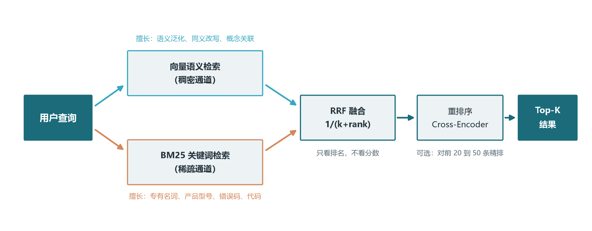
4.8 融合算法的对比与选择
除 RRF 外，常见的融合算法还有 CombSUM 与加权求和（Weighted Sum）。
加权求和最直观：score(d) = α · score_vec(d) + (1-α) · score_bm25(d)。它的前提是两路分数已经归一化到同一量纲（如 [0,1]），否则量纲大的一路会淹没另一路。加权求和的优点是语义明确，α 直接控制两路权重；缺点是需要分数归一化，且对异常值敏感。Weaviate 的 alpha 参数本质上就是这种加权求和。
CombSUM 将各路分数归一化后直接相加：score(d) = Σ normalize(score_r(d))。它比加权求和更简单，但同样依赖归一化质量。如果两路分数的分布差异巨大，归一化就会失真。
RRF 则完全绕开分数归一化问题，只用排名信息。这使得它在不同检索系统组合时最稳健，也是 Qdrant、Milvus、Pinecone 等多数向量数据库默认采用的融合方式。代价是丢失了分数的绝对差异信息：排名第 1 和第 2 的文档即便分数差距很大，RRF 也只给它们接近的权重。
选型经验：跨系统融合、分数不可比时用 RRF；单系统内、分数已归一化且希望精细控制权重时用加权求和；有标注数据时，可进一步用学习排序（Learning to Rank）训练一个轻量级模型，自动学习两路分数的最佳组合，这在领域特定语料上通常能进一步提升 3 到 7 个百分点的 nDCG。
4.9 alpha 权重的调优方法
工程实践中常提到"调整混合搜索 alpha 参数在 0.5 到 0.7 之间取得最佳平衡"。这里的 alpha 在不同系统中含义略有不同：在 Weaviate 中 alpha 直接控制向量搜索与 BM25 的权重；在自定义 RRF 中，可以通过 weights 参数实现类似效果；在 Qdrant 的 fusion 配置中，每一路的 weight 就是权重乘子。
调优的方法论很简单：准备一个包含真实查询的评测集，让候选 alpha 值各跑一遍，用 nDCG@10 或 Recall@10 做指标对比。经验起点：查询以专有名词、型号、代码、错误码为主时，BM25 权重更高（alpha 偏向 0.2 到 0.4）；查询是口语化、概念性问题时，向量搜索权重更高（alpha 偏向 0.6 到 0.8）；混合查询用 0.5 到 0.6 作为起点。
但注意几点。第一，alpha 不是越大越好。某些场景下 0.5 的 RRF 就能达到 0.7 alpha 加权求和的效果，因为 RRF 不依赖归一化质量。第二，alpha 的最优值随业务变化——产品文档与代码库的查询模式截然不同，必须用各自业务的评测集调优。第三，alpha 调优是一个连续过程而非一次性决定：随着知识库增长、用户查询分布变化，最优 alpha 也会漂移，建议每季度重跑一次评测。
4.10 落地案例：客服知识库的混合搜索
一个客服知识库的真实案例可以帮我们看清混合搜索的价值。某电商客服团队接入向量检索后，常见问题的召回率从关键词时代的 65% 提升到 88%，但仍有三类问题频繁失败。第一类是型号与错误码——用户问"iPhone 15 Pro Max 的退款政策"，向量检索把它和"退换货流程"混为一谈；BM25 一眼锁定"iPhone 15 Pro Max"关键词，召回率显著提升。第二类是缩写与代码——用户问"A-1007 错误怎么办"，向量检索把整段话当语义理解，召回一堆无关文档；BM25 直接命中错误码。第三类是品牌名——用户问"Apple Watch 怎么激活"，向量检索可能拉到"watch 表"的无关文档，BM25 精准定位品牌。对照 4.2 到 4.6 节的框架，这三类失败的共同点一目了然：都是"语义稀薄但字面精确"的查询，正是稀疏向量的主场。
上线混合搜索后，整体召回率从 88% 抬到 96%，转人工率下降近一半。alpha 通过评测集网格搜索确定在 0.55，权重略偏向量但保留 BM25 的精确能力。后续的优化还包括：对常见型号建立别名词典并通过 BM25 同义词扩展加入；对错误码建立专用字段并优先召回；定期人工审计"用户认为答错了"的案例，从中发现 alpha 漂移的信号。
这个案例说明：混合搜索不是"1 加 1 等于 2"的简单叠加，而是"让两种擅长相互补位"的工程哲学。理解了这一点，再去看 Qdrant、Milvus、Weaviate 等向量库的混合搜索 API，就能明白每个参数背后解决的是什么具体问题——它们无非是在配置"哪几种坐标系统参与、各自权重多少、如何融合"。
第五章 选型决策与生产运维
5.1 主流向量库横向对比
市场上向量数据库众多，本卷聚焦六款最具代表性的产品：Pinecone、Qdrant、Milvus、Chroma、Weaviate、pgvector。这六款覆盖了从嵌入式到分布式、从开源到全托管、从传统数据库扩展到专用向量库的全部主流形态，是绝大多数团队选型时会落入的“候选短名单”。其他产品如 Vespa、Vald、Marqo、Chroma Cloud 等各有特色，但定位与上述六款重叠较多，本卷不展开。
Pinecone 是商业全托管向量库的标杆。零运维、API-first、按用量计费，是它的核心卖点。Serverless 架构将存储与计算分离，按读取单元（Read Unit）和写入单元（Write Unit）计费。官方宣称在十亿向量规模下 P50 查询延迟可低至 31 毫秒，带元数据过滤的 P50 查询可低至 12 毫秒。索引参数由平台自动管理，用户无法手动设置 HNSW 的 M 或 ef；这在简化运维的同时也限制了对索引的精细调优。对于需要私有部署或精细控制的团队，Pinecone 不在候选之列。
Qdrant 是 Rust 编写的开源向量库，以高性能、低延迟和丰富的过滤能力著称。核心设计 Filterable HNSW 让过滤条件在 HNSW 遍历过程中执行而非事后或事前过滤，性能显著优于传统方案。Qdrant 支持多种量化方式（SQ、SQ8、BQ、TurboQuant）、原生混合搜索（dense 加 sparse vectors）、多向量表示、重排序与 MMR 多样性排序。Qdrant Cloud 提供全托管服务，Hybrid Cloud 与 Private Cloud 满足合规需求。Gridstore 是 Qdrant 自研的存储引擎，针对向量数据做了优化，能在内存和磁盘之间智能分层。
Milvus 是面向十亿级规模的分布式向量库，已被 CNCF 接纳为孵化项目。它支持 Milvus Lite（嵌入式）、Standalone（单机）、Distributed（Kubernetes 分布式）与 Zilliz Cloud（全托管）多种部署形态。Milvus 2.5 以上引入了原生 BM25 支持，使得混合搜索可以在一个 collection 内通过 Function 定义自动完成。Milvus 的架构包括 Proxy、Query Node、Data Node、Index Node 四个组件，可独立扩展查询与写入能力。劣势是部署与运维相对复杂，通常需要 Kubernetes 与专业的平台团队。
Chroma 是以 Python 原生、易用性著称的开源向量库，设计目标是“让开发者用最少代码快速搭建 RAG 原型”。提供内存模式、持久化模式与客户端-服务器模式，支持自动嵌入（默认使用 all-MiniLM-L6-v2）、元数据过滤与简单的全文过滤。2025 年 Chroma 进行 Rust 重写，性能提升约 4 倍。Chroma Cloud 提供 Serverless 托管服务。Chroma 的劣势是规模上限相对较低（推荐百万级以下），不适合超大规模生产环境，更适合教学、原型验证、小型 RAG 项目。
Weaviate 是 Go 编写的开源向量库，核心特色是“模块化”：内置对多种嵌入模型（OpenAI、Cohere、HuggingFace、Sentence-Transformers）和多模态模型（CLIP）的集成，用户可以在数据写入时自动调用这些模型生成向量，无需自行管理嵌入流程。Weaviate 在混合搜索上是先行者，原生支持 BM25 与向量搜索的混合检索，通过 alpha 参数直接控制两路权重。Weaviate 的过滤采用 ACORN 算法，属于单阶段过滤思路。Weaviate Cloud 提供全托管服务，内置多租户支持。
pgvector 是 PostgreSQL 的官方向量扩展，把向量类型与 ANN 索引直接集成到 PostgreSQL 中。最大优势是：如果业务已经在用 PostgreSQL，那么无需引入额外的数据库组件就能直接实现向量检索。pgvector 支持 HNSW 与 IVFFlat 索引，支持余弦、欧氏、内积、L1、Hamming、Jaccard 六种距离。限制是受限于 PostgreSQL 单实例的垂直扩展能力，超大规模场景需要配合 Citus、PgDog 或读写分离。但对已有 PostgreSQL 生态、数据规模在千万级以下的系统，pgvector 是最自然、成本最低的选择。
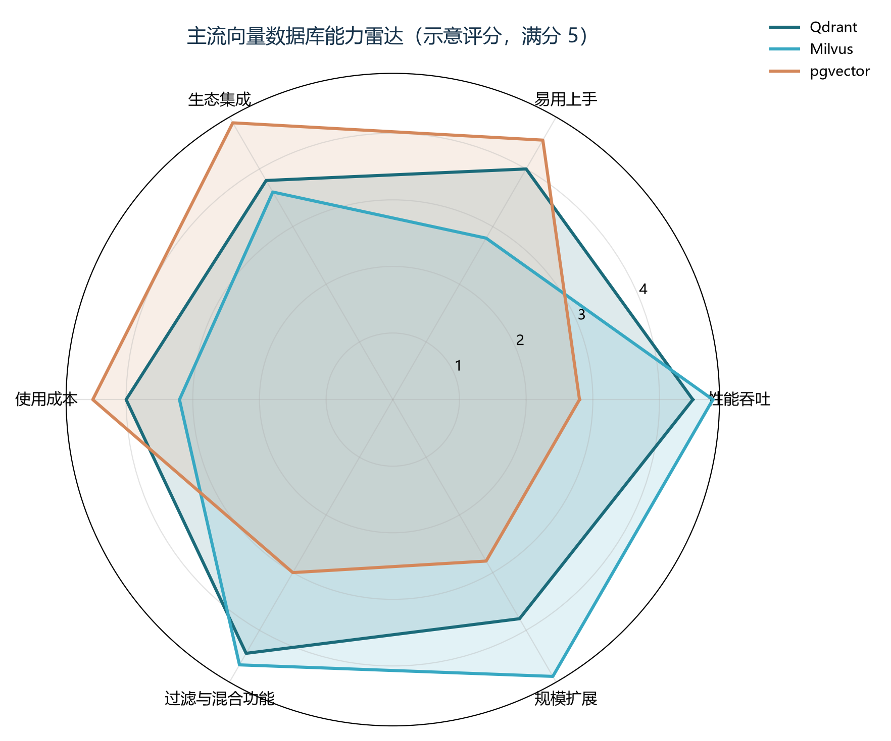
| 特性 | Pinecone | Qdrant | Milvus | Chroma | Weaviate | pgvector |
|---|---|---|---|---|---|---|
| 开源许可 | 商业闭源 | Apache 2.0 | Apache 2.0 | Apache 2.0 | BSD-3 | PostgreSQL License |
| 托管服务 | 成熟全托管 | Qdrant Cloud | Zilliz Cloud | Chroma Cloud | Weaviate Cloud | AWS RDS / Supabase |
| 本地部署 | 否 | 是 | 是 | 是 | 是 | 是 |
| 推荐规模 | 百万到百亿 | 百万到十亿 | 十亿到千亿 | 百万以下 | 百万到十亿 | 千万以下 |
| 核心索引 | 平台自动管理 | HNSW | HNSW/IVF/GPU/DiskANN | HNSW | HNSW | HNSW/IVFFlat |
| 混合搜索 | 支持（dense+sparse） | 原生支持 | Milvus 2.5+ 原生 BM25 | 部分支持 | 原生支持（alpha 参数） | SQL 组合 |
| 元数据过滤 | 内置 | Filterable HNSW | 标量索引加表达式 | 内置 | ACORN 单阶段 | SQL WHERE |
| 二进制量化 | 支持 | TurboQuant/BQ | 支持 | 否 | 支持 | 支持 bit 类型 |
| 内置向量化 | 否 | 否 | 否 | 是（all-MiniLM） | 是（多模型） | 否 |
| 运维复杂度 | 低 | 中 | 高（需 K8s） | 低 | 中 | 低 |
| 典型成本 | 高（托管溢价） | 中 | 低到中 | 低 | 中 | 低 |
5.2 选型决策树
工程实践中通常建议按以下决策路径逐步筛选，核心原则是“先复用已有基础设施，遇到瓶颈再升级”，避免过早引入复杂的专用系统。
图5-2 把这条决策路径画成了一棵可以直接走的树：从数据规模出发，途经过滤、混合检索、运维能力四道岔口，最后落到「复用存量」这个最容易被忽略的原则上。对着它走一遍，大多数团队很快就能定下候选方案。
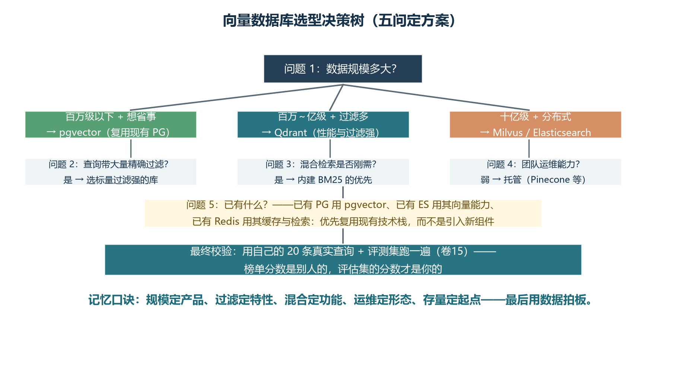
第一步：检查是否已有 PostgreSQL。如果是，且数据规模小于 1000 万向量，优先考虑 pgvector。它不需要引入新组件，可以利用现有的 DBA、备份、监控、事务能力。pgvector 的延迟虽然不如专用向量库，但对绝大多数中小规模业务已经够用。
第二步：如果没有 PostgreSQL，考虑是否需要全托管服务。如果团队没有运维向量库的经验，或者希望快速上线 MVP，Pinecone 或 Qdrant Cloud 是不错的选择。Pinecone 的零运维体验最好，但成本较高；Qdrant Cloud 在性能与成本之间提供了较好的平衡。
第三步：如果数据规模在 1000 万到 1 亿之间，且需要灵活的过滤和混合搜索，Qdrant 或 Weaviate 是性价比之选。Qdrant 的 Filterable HNSW 与原生混合搜索使其在过滤查询场景下表现尤为突出；Weaviate 的模块化与 alpha 参数让混合搜索调优非常直观。
第四步：如果数据规模超过 1 亿，或者需要支撑企业级多租户、多副本、分布式扩展，Milvus 或 Zilliz Cloud 是更成熟的选择。Milvus 的分布式架构与 CNCF 治理保证了大规模下的可靠性，但运维复杂度较高。
第五步：如果只是教学、原型验证或小型项目，Chroma 是最简单的起点。它用最少代码就能跑通完整链路，2025 年 Rust 重写后性能也有显著提升。
选型时要警惕几个反模式。第一，盲目追求高维 Embedding。很多团队认为维度越高效果越好，于是选用 3072 维甚至更高的模型，结果存储与计算成本飙升，检索质量提升却有限——对多数文本场景，768 维或 1024 维已经足够。第二，忽视嵌入模型与业务的匹配度。通用模型在垂直领域往往表现不佳，法律、医疗、金融、电商等场景需要领域特定模型或微调；模型本身的语义表示不准确，再好的向量库也无济于事。第三，只看 QPS 不看召回率。向量库的核心价值是“找得准”，如果只追求高 QPS 而忽略 Recall@K，最终会影响 RAG 和 Agent 的生成质量。第四，过早引入专用基础设施。一个被反复验证的中肯建议是：有 PostgreSQL 先试用 pgvector，遇到真实瓶颈再迁移。
5.3 索引调优与容量规划
HNSW 的参数调优是向量库性能调优的核心。M 参数表示每个节点在每层的最大连接数，默认 16 适用于大多数 256 到 768 维场景；如果追求 99% 以上召回率或维度较高，可以提高到 32 或 64。M 每增加一倍，索引内存大约增加一倍。efConstruction 推荐 200 到 500，主要影响构建时间和图质量，对查询延迟影响很小；如果数据集很大且可以离线构建，建议用较大的 efConstruction。efSearch 通常设为 K 的 5 到 10 倍；如果召回率不达标，逐步提高 efSearch；如果延迟过高，逐步降低。
对于 IVF 索引，nlist 通常取数据量的平方根；nprobe 从 nlist 的 1/16 开始，根据召回率测试逐步增加。IVF 加 PQ 组合中，PQ 的子向量数 m 需要平衡压缩比与精度：m 越大压缩比越小但精度越高，常见取值 16 到 96。
容量规划有几个经验法则可以快速估算。每张卡 32GB 内存大约能装下 1 亿条 768 维 float32 向量（粗略估算）；用 PQ 量化压缩到 32 倍，1 亿条向量只需约 1GB 内存；用 BQ 压缩则可压到 0.3GB 以下。CPU 选型上，向量检索是计算密集型，主频比核心数更重要——单核主频 3.5GHz 通常优于 16 核 2.0GHz；GPU 加速能把 IVF_PQ 的查询速度提升 10 倍以上，但只在固定规模下才划算。
索引重建是向量库运维的“大事”。任何参数变更、嵌入模型升级、向量维度调整都需要重建索引，时间从几十分钟到几小时不等。建议在业务低峰期执行，使用双写（dual-write）保证新数据不丢，用新旧索引的并行查询做对比验证，再逐步切流到新索引。
5.4 备份、迁移与版本升级
备份策略取决于数据库类型。Pinecone、Qdrant Cloud 等托管服务提供自动备份与时间点恢复；自建部署的 Qdrant、Milvus 等需要配置快照（snapshot）与对象存储（如 S3）周期性导出；pgvector 直接用 PostgreSQL 的 pg_dump 即可。备份频率建议至少每日一次，关键业务考虑实时复制。
迁移是向量库生命周期中最容易出错的环节。常见场景包括：从 Chroma 升级到 Qdrant 以提升性能、从 pgvector 升级到 Milvus 以应对规模增长、从 Pinecone 迁到 Qdrant 以降低成本。迁移的核心步骤是：建立新旧两套索引并行运行（双写）、用相同的评测集对比两套系统的指标（Recall@K、延迟、QPS）、逐步切流（先切 1%，观察无异常再切 10%、50%、100%）、最后下线旧系统。需要特别注意：不同数据库的距离度量、索引参数语义可能不完全等价，迁移后必须重新跑评测集，不能假设“参数相同即结果相同”。
版本升级同样需要谨慎。向量库的版本更新可能包含破坏性变更（如索引结构变化、新版默认参数改变），升级前必须查阅 changelog 与迁移指南。建议先在测试环境验证：重建索引、跑评测集、对比性能与召回率。Milvus 等较大版本升级（如 2.4 到 2.5）可能涉及元数据兼容性问题，需要专门的升级脚本；Qdrant 与 pgvector 的升级相对平滑，但仍建议保留回滚方案。
5.5 监控指标与告警
生产向量库的监控需要关注查询延迟（P50、P95、P99）、QPS、召回率（通过 A/B 测试与抽样审计估算）、索引构建时间、内存使用率、磁盘 I/O、错误率。Qdrant、Milvus、Pinecone 都提供了 Prometheus 与 Grafana 集成，pgvector 则继承 PostgreSQL 的 pg_stat_statements。
几个关键告警规则值得专门配置。第一，P99 延迟超过 SLA 阈值（如 200 毫秒）告警——长尾延迟直接影响用户体验。第二，QPS 突降或突增告警——突降可能意味着服务异常，突增可能是爬虫或滥用。第三，内存使用率超过 80% 告警——向量库的内存需求通常是刚性的，接近上限时性能会急剧恶化。第四，索引构建任务失败告警——索引重建失败会导致新数据无法被检索到。
召回率的监控是一个特殊的难题。生产环境的真实召回率无法直接测量（因为没有“真值”），只能通过 A/B 测试与抽样审计间接估算。一个常见的做法是：定期从生产查询中抽样若干条，人工评估返回结果的“是否相关”，把人工评估的准确率作为召回率的代理指标；或用 LLM-as-a-Judge 自动评估 Top-K 结果的相关性，配合小规模人工抽检校准。
成本监控也是向量库特有的议题。Pinecone 按 Read Unit 与 Write Unit 计费，Qdrant Cloud 按节点与存储计费，自建部署按硬件与运维人力计费。建议每月输出成本分析报告，量化“单位查询成本”“单位存储成本”，发现异常增长及时排查。
第六章 经典存储组件与 RAG 的协同：ES 与 Redis 在 Agent 系统中的角色
6.1 为什么不能只用向量库
前五章把向量库的索引算法、相似度度量、混合搜索、选型决策讲透了。但任何真实工程做到最后都会撞上一个事实：向量库不是万能的。向量检索擅长"语义相似"，但对精确短语、专有名词、型号代码、数字范围等问题表现很差。例如用户在企业知识库里搜"工单号 WX2024-08-1234"、搜"金额 500 万以上的合同"、搜"2024 年 Q3 财报附录 B"，向量检索要么语义偏移，要么干脆召回不到。原因是显而易见的：向量嵌入抹掉了字面细节，把"工单号 WX2024-08-1234"和"工单号 WX2023-11-5678"编码到几乎相同的语义向量里——而它们其实是不同的东西。
另一个现实是，大多数企业的存量数据并不只是文本。订单、客户、产品、合同——这些数据天然以结构化或半结构化形式存在，关联在 MySQL、PostgreSQL 等关系数据库里。向量检索解决"语义相似"，但回答"客户 X 上个月的总消费金额"这种问题，必须回到关系查询或聚合引擎。强行把这些数据切片向量化会带来昂贵的 ETL 流水线与同步延迟，并不划算。
因此，工程上的事实标准是多组件协同：让每个组件做自己最擅长的事，然后用合理的架构把它们组合起来。本章展开讲两类经常被低估、却在 Agent 系统中无处不在的组件：Elasticsearch（精确检索与聚合的主力）与 Redis（缓存、记忆与协调的多面手）。掌握它们与向量库的协作模式，是从"RAG 演示"走向"生产 RAG 系统"的关键一步。
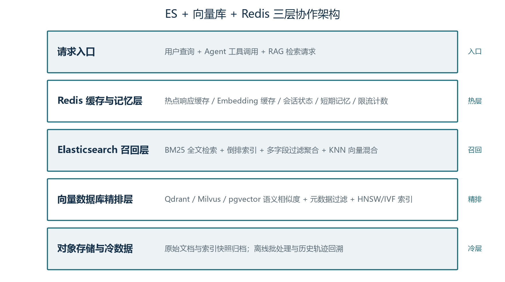
6.2 Elasticsearch：BM25 与多字段检索的主力
Elasticsearch（ES）是一个基于 Apache Lucene 的分布式搜索与分析引擎，2010 年首发后已成为日志、监控、搜索场景的事实标准。它在 RAG 与 Agent 系统中的角色分三层。第一层是经典全文检索：BM25 算法基于词频与文档长度归一化打分，对"精确短语/型号/代码/数字"问题表现远胜向量检索——用户问"型号 X100 的 GPU"时，向量检索可能因为"型号"和"X100"在不同上下文中常一起出现而把多个 SKU 混淆，BM25 则直接通过倒排索引定位包含"X100"的文档。第二层是结构化过滤与聚合：ES 支持 numeric range、term、terms、bool 复合查询，能精确回答"金额>500万 AND 2024年 Q3"这类问题，并能按任意字段做 group by、sum、avg 聚合。第三层是 8.x 后的向量能力：ES 原生支持 dense_vector 字段类型与 KNN 检索，配合 RRF（Reciprocal Rank Fusion）可与 BM25 在同一查询里融合——一个查询同时命中"语义相似"与"字面精确"。
ES 在 RAG 中的工程化用法有三种模式。模式一：纯 ES（含向量）：把所有文档索引到 ES，用 hybrid 查询同时跑 BM25 + KNN，再 RRF 融合。优势是部署简洁（一套组件）、多字段过滤与聚合免费；劣势是大数据集上的向量性能不如专用向量库（HNSW 调参、IVF、PQ 这些 ES 内部支持但参数空间小）。模式二：ES + 专用向量库：ES 负责 BM25 与过滤，专用向量库（Qdrant/Milvus/pgvector）负责语义检索，查询层在 RRF 融合两路召回。优势是每个组件各司其职、性能可优化空间大；劣势是运维两套组件，数据同步是工程坑。模式三：ES 作为唯一存储，pgvector 作为向量后端：若已用 PostgreSQL 生态，pgvector 加 ES 是务实的组合——pgvector 走语义、ES 走 BM25 + 过滤，统一在 Postgres 层管理。
工程上有个关键细节：ES 索引膨胀问题。每个 text 字段在 ES 内部都会被分词并建立倒排索引，字段越多索引越大。例如 1 亿条 1KB 文档、所有字段全开，ES 索引可能膨胀到 100GB+。生产环境必须严控字段映射：能不分词的字段（keyword、numeric）用 keyword；分词字段用合适的 analyzer（中文用 ik_max_word 或 smartcn，避免默认 standard analyzer 把中文切得支离破碎）；长期不查的字段关闭 doc_values。索引生命周期管理（ILM）让冷热数据分层——近期数据 SSD 跑实时检索，3 个月后转 HDD 跑聚合查询。
ES 在 Agent 系统中的另一个角色是审计与可观测。OpenTelemetry 的日志与指标后端、Grafana 的数据源、LangSmith/Langfuse 的事件存储——大量可观测组件默认支持 ES 做存储引擎。把 Agent 系统的 trace 与日志接入 ES，工程师可以快速做"找出昨天所有失败的任务、按用户/工具/模型分组分析"这类排查动作。这条能力常被低估：事故复盘的效率在很大程度上取决于"找不找得到那一天那一秒那一条请求"，而 ES 的全文检索让这件事变得毫不费力。
6.3 Redis：Agent 系统的多面手
Redis 的官方定位是"in-memory data structure store"，但对 Agent 系统而言它是一把瑞士军刀——任何"需要快速、低延迟、临时或半持久"的场景，几乎都能找到 Redis 的用武之地。把 Redis 在 Agent 中的角色拆成五层来理解。
第一层是缓存层（最常用）。三类高价值缓存都常驻 Redis：LLM 响应缓存（同一 prompt 同一模型返回相同结果，直接复用而不再调用模型）、Embedding 缓存（同一文本的向量在向量库里查之前先查 Redis，命中即返回，省一次向量库的 KNN 计算）、语义缓存（把用户查询 embedding 后做 KNN，命中相似度足够高的历史查询并复用其响应，卷08 讲过的 LangChain RedisSemanticCache 是典型实现）。命中率从 30% 到 70% 都有可观收益——尤其在客服、内部知识问答这类"重复问题多"的场景。
第二层是短期记忆与会话状态。与卷11 详细讨论的"长期记忆"相对应，短期记忆（单次会话内的对话历史、工具调用结果、待办列表）天然适合放在 Redis：低延迟读写、TTL 自动清理、天然支持分布式共享。session:{user_id} 存对话消息列表，tool_cache:{call_hash} 存工具调用的去重结果（同样参数同样输入不重复执行），ratelimit:{api_key} 存限流计数器。Redis Streams 还能作为"事件队列"在多 Agent 间传递消息——比 Kafka 轻、比 HTTP 推送可靠。
第三层是分布式协调。Agent 系统常需要去重、限流、分布式锁、唯一性约束——这些"经典分布式系统问题"在 Redis 里都有现成模式。SETNX 实现分布式锁（注意加 TTL 防止死锁），INCR + EXPIRE 实现计数器限流，Bloom Filter / Cuckoo Filter 实现海量去重，HyperLogLog 实现"独立访客数"等去重统计。卷16 会详细展开限流与分布式协调的工程模式。
第四层是图与数据结构。Redis 的 Hash、Set、Sorted Set、Geo、Stream 五种结构对 Agent 系统都是宝藏：Sorted Set 实现排行榜与优先级队列（任务调度按优先级取 TopN）、Set 实现标签与权限集合（用户具有哪些角色、能调用哪些工具）、Hash 存半结构化实体（用户的偏好字典、Agent 配置）、Geo 处理地理位置查询（附近的服务点、就近的物流仓）。这些能力常被低估——许多人把 Redis 当作纯 KV，浪费了它作为数据结构的全部价值。
第五层是语义缓存的工程实现。RedisSemanticCache 是 LangChain 提供的开箱即用实现：把 query 与 response 配对存到 Redis，查询时先做 embedding → 在 Redis 上跑相似度 KNN → 命中阈值（默认 0.85）即返回缓存响应，未命中回源到 LLM。它是降低 LLM 成本与延迟最直接的工具之一。下面是一个手写简化版：
import redis, numpy as np
r = redis.Redis(host="redis", port=6379)
EMBED_KEY = "emb:{hash}" # 存单条 embedding
CACHE_KEY = "cache:{hash}" # 存 LLM 响应
def get_embedding(text):
h = sha1(text)
cached = r.get(EMBED_KEY.format(hash=h))
if cached: return np.frombuffer(cached, dtype=np.float32)
vec = embed_model.encode(text)
r.set(EMBED_KEY.format(hash=h), vec.tobytes(), ex=86400)
return vec
def cached_query(query, threshold=0.92):
q_vec = get_embedding(query)
# 简化：在已知缓存集合中做线性扫描（生产用 Qdrant 做 KNN）
for key in r.scan_iter("cache:*"):
c_emb = r.hget(key, "emb"); if not c_emb: continue
sim = np.dot(q_vec, np.frombuffer(c_emb, dtype=np.float32))
if sim >= threshold:
return r.hget(key, "response").decode()
return None工程上有几条经验。第一，Redis 持久化有 RDB 与 AOF 两种模式，对缓存层通常关闭持久化（重启丢数据无所谓、性能更重要），对会话状态层通常开启 AOF（容忍少量丢数据但必须能恢复）。第二，TTL 必须显式设置，否则内存无限增长；统一约定"业务 TTL"与"清理 TTL"两套值避免误删。第三，大 Key 与热 Key 问题——单个 Key 超过 10MB、或单个 Key 的 QPS 超过 1 万，都会引发 Redis 单线程阻塞或单节点压力过大，需要拆 key 或加本地缓存。第四，集群模式 vs 单机模式：数据量 < 50GB 用单机 + 多副本即可；> 100GB 才考虑 Cluster 模式，但 Cluster 模式不支持多 Key 事务与跨 Key 命令，需要重新设计数据模型。
6.4 三种组件的协作架构
把 ES、向量库、Redis 组合起来做 RAG/Agent 检索，业界形成了三种典型架构。
架构 A：Redis 缓存层 + ES 召回 + 向量库精排（最常见）。请求进入时先查 Redis 缓存，命中即返回；未命中则并行查询 ES（BM25 + 多字段过滤）与向量库（KNN 语义召回），在查询层 RRF 融合两路 Top-K，重排序（cross-encoder）后再用 LLM 生成响应，最后把响应与 embedding 写回 Redis 缓存层。适用场景：通用企业 RAG、中等流量（QPS < 100）、对延迟敏感。优点是各组件各司其职、可独立扩容；缺点是组件多，运维成本与故障面更大。
架构 B：Redis 记忆层 + ES 单一检索（轻量级）。请求先查 Redis 看是否有缓存的精确答案（如工单号、合同号），命中即返回；否则查 ES（BM25 + 向量 + 多字段过滤，全部由 ES 完成）。适用场景：企业内部问答、知识库规模较小（< 1000 万文档）、对运维复杂度敏感。优点是组件最少、运维最简；缺点是 ES 单点性能有上限，大规模向量检索的优化空间小。
架构 C：Redis 协调层 + 专用向量库 + 数据库/数仓（数据驱动）。向量库负责语义召回，关系数据库或数据仓库负责结构化查询（如"我的订单状态"），Redis 负责缓存、会话状态、限流与工具调用去重。适用场景：Agent 需要频繁调用业务系统、操作数据库或查询分析型工作负载。优点是数据层职责清晰、与业务系统解耦好；缺点是设计复杂度高、需要清晰的数据所有权矩阵。
选择哪种架构的关键问题有三个：问题一，数据规模与多样性——纯文本 + 小规模（< 100 万文档）选 B，中等规模 + 多类型选 A，大规模 + 业务系统集成选 C。问题二，延迟与吞吐目标——P99 < 100ms 的实时场景需要 A 或 B，秒级响应的批量分析场景用 C。问题三，团队的运维能力——团队里有没有 ES 专家、有没有 Redis 集群运维经验、有没有向量库调优经验？组件数与技术债成正比，不要在 PoC 阶段就铺满所有组件。
6.5 冷热分层与缓存策略
真实工程中另一件容易忽略的事是冷热分层。把"最近最常被问到的问题"放热层（Redis + ES 内存缓冲），把"偶尔被问到但需要全量检索"的问题放温层（ES 索引 + 向量库），把"历史归档与离线分析"的问题放冷层（对象存储 + 数据仓库）。这种分层让热路径（80% 的请求）始终在最快的小数据集上运行，冷路径（20% 的请求）只在必要时才走慢路径。
缓存策略的设计有几个公认的最佳实践。缓存击穿：某个热点 Key 过期瞬间大量请求同时打到下游；用 singleflight（Go）或互斥锁（Python）让"只有一个请求去回源"，其他请求等待缓存回填。缓存雪崩：大量 Key 同时过期导致后端压力陡增；把过期时间加随机抖动（如 TTL ± 10%）打破同步。缓存穿透：查询的 Key 在缓存与后端都不存在，每次都打到下游；用布隆过滤器（Bloom Filter）前置过滤非法 Key，命中"一定不存在"就直接返回空。缓存更新策略：先更新数据库再失效缓存（而不是先更新缓存再更新数据库），并发场景下用延迟双删或基于 binlog 的异步失效。
监控指标也要分两层。Redis 层：内存使用率、命中率、平均延迟、Keyspace 命中/未命中次数、慢查询、连接数、复制延迟。ES 层：JVM heap、索引搜索延迟（P50/P99）、集群健康状态（green/yellow/red）、未分配分片数、merge/flush 队列。向量库层：索引加载率、查询 QPS、召回率、IVF/PQ 召回与全量对比的差值（用于监测量化损失）。这些指标在卷15 的可观测性体系里有完整的采集与告警规范。
6.6 与卷11 记忆系统的衔接
短期记忆与会话状态是 Redis 在 Agent 系统里的另一大用武之地，与卷11 的记忆系统设计一脉相承。短期记忆（当前会话上下文）天然适合 Redis：低延迟读写、TTL 过期清理、支持分布式共享。长期记忆（跨会话持久化的实体与事件）则交给向量库 + 图数据库——Redis 不适合长期存储大容量数据（成本高、序列化成本高）。两者通过同一会话 ID 串联：session:{id}:short 在 Redis 存当前对话，session:{id}:memory_index 在向量库指向该会话的长期记忆节点。
工程上要注意两层之间的一致性问题。短期记忆可能引用长期记忆里的实体（"昨天讨论的那份合同"），如果长期记忆更新了引用，短期记忆里残留的旧引用就会让模型困惑。常见做法是：长期记忆的每次更新同步失效短期记忆（用消息队列广播）或在每次会话开始时让 Agent 主动检索最新长期记忆再拼接到短期上下文。前者实时性好但工程复杂，后者简单可靠但延迟稍高。
一个值得借鉴的模式是 Redis Streams 做 Agent 间的事件总线。多个 Agent（或同一 Agent 的多个并行分支）之间传递中间结果用 Streams：XADD agent:{session}:events * step 3 result "..." 写入事件，其他 Agent 用 XREAD BLOCK 5000 STREAMS agent:{session}:events 0 阻塞读取。Streams 同时提供 Consumer Group 做负载均衡与故障恢复，足以支撑中等规模的 Agent 编排——比 Kafka 轻、比 HTTP 推送可靠，比 Redis Pub/Sub 多了持久化与回溯能力。
6.7 选型决策与生产陷阱
三组件选型时一个常被忽略的判断是"已经有什么"。如果团队已用 Elasticsearch 做日志平台，把 RAG 检索也放在 ES 上是最低成本的扩展；如果团队已有 Redis 做缓存，把短期记忆与限流也放在 Redis 是自然的延伸；如果团队已有 pgvector，把向量检索放在数据库里能与事务强一致。选择新组件的判断点不是"哪个最强"，而是"哪个最贴合现有技术栈与团队能力"。
几个生产中常见的陷阱值得点名。第一个是 ES 的写入延迟——ES 是近实时系统（默认 1 秒刷新一次索引），不适合需要立刻可查的写入后立即查询场景。解决办法是用强制 refresh 接口或调小刷新间隔，但代价是写入吞吐下降。第二个是 Redis 的内存成本——纯内存数据库，几百 GB 数据的成本远超磁盘数据库；解决办法是用 Redis on Flash 或分层存储（热 Key 在内存、冷 Value 序列化到 SSD）。第三个是向量库的冷启动——重启后向量索引需要从磁盘全量加载，对亿级向量可能耗时十分钟到几小时；解决办法是用预热脚本 + 优雅下线机制，或使用支持 mmap 持久化索引的引擎（Qdrant、HNSWlib）。
第四个是 ES/Redis/向量库的同步延迟。同一份文档被索引到 ES、向量库、Redis 缓存三层时，三层的写入顺序与可见性差异会导致查询时短暂出现"在 ES 里有但在向量库里没有"的窗口。工程上要么用分布式事务（成本高）、要么用最终一致性 + 短期查询降级（成本低）。生产实践里后者是常态：用 Kafka/Pulsar 把索引变更广播给所有消费者，每个消费者独立处理自己的存储层；查询时如果某层"找不到"，标记为"暂时未就绪"，由上层 RRF 融合时跳过该层——比强一致简单得多，效果也足够好。
6.8 一张完整的 RAG 系统组件地图
把本章讲的所有内容收拢成一张全景图。请求进入 Agent 系统后，依次经过：Redis（缓存与会话）→ ES（精确检索与过滤）→ 向量库（语义检索）→ 重排序（Cross-Encoder）→ LLM（响应生成）→ 写回 Redis（缓存）。每一步失败都有降级策略（缓存未命中则跳过、ES 不可用则纯向量检索、向量库不可用则纯 BM25、LLM 不可用则返回片段并标记）。这是一套"组件可插拔、降级可定义、监控可观测"的生产级 RAG 架构。
数据写入路径则是另一套流程：原始文档 → Reader（卷08 LlamaIndex）→ Transformation（切分、抽取元数据）→ 并行写入 ES + 向量库 + Redis 缓存。原文档存对象存储（如 S3/MinIO），索引变更写 Kafka 供其他消费者订阅。这样读路径的每一层都有数据，写路径的任何失败都有补偿机制（消息重试 + 死信队列）。
这一章收尾时，把视角拉远。Agent 系统的"基础设施"层看似工程性、不性感，但生产 Agent 项目里 80% 的事故与性能问题都出自这一层——模型本身再强也救不了"检索错了""缓存击穿了""内存爆了"。理解 ES / Redis / 向量库各自的边界与协作模式，是 Agent 工程师区别于"调参工程师"的核心能力之一。卷09 至此覆盖了检索与存储的全部内容，下一章我们将深入到"如何让 Agent 记住过去"——记忆系统的工程实现与卷11 衔接。
本卷小结
本卷回答了五个层层递进的问题。为什么要向量数据库：关键词检索存在词汇不匹配、语义泛化弱、多模态受限三道天花板，向量检索通过高维语义空间的相似度匹配解决这些难题，是 RAG 与 Agent 的关键基础设施。索引怎么工作：HNSW 用多层图结构提供对数复杂度的快速搜索，是当前工业界最主流的索引；IVF 用聚类分桶减少扫描范围，构建更快且更省内存；PQ 与 BQ 等量化技术通过压缩让十亿级向量住进内存；这些索引与量化技术可以正交组合。
相似度怎么度量：余弦、内积、欧氏三种度量各有适用场景，归一化与命名差异是常见陷阱；标量过滤的后过滤、预过滤、单阶段过滤三种策略在过滤选择性变化时各有优劣；元数据设计应当兼顾过滤、权限与治理。混合搜索怎么强：BM25 在专有名词、型号、代码等精确匹配上仍然无可替代，RRF 融合算法用排名信息绕开分数归一化难题，是混合搜索的事实标准；alpha 权重需要用评测集调优，跨系统融合首选 RRF，单系统内加权求和更精细。选型怎么决策：主流向量数据库各有定位与适用场景，决策的核心是“先复用已有基础设施，遇到瓶颈再升级”；pgvector 适合中小规模与已有 PostgreSQL 的团队，Qdrant 与 Weaviate 适合中等规模与混合搜索场景，Milvus 适合超大规模分布式，Pinecone 适合零运维场景，Chroma 适合原型验证。
贯穿全卷的方法论只有一条：用评测集说话，用 Recall@K 与延迟分位数衡量一切。每一次参数调整、版本升级、数据库迁移，都应先在评测集上回归，用数据而非感觉做决策。向量库的优化是“用数据说话”的典型场景，靠感觉调参数往往南辕北辙——这是从“演示品”走向“生产系统”的关键一步。
本卷实战实验室
本卷实验：亲手建一个向量库，并亲手调一次 HNSW 的旋钮。总耗时约 60 分钟；用 qdrant-client 内存模式，无需安装任何服务。
实验 1：Qdrant 内存模式建库与检索（30 分钟）
# pip install qdrant-client sentence-transformers
from qdrant_client import QdrantClient
from qdrant_client.models import Distance, VectorParams, PointStruct
from sentence_transformers import SentenceTransformer
mdl = SentenceTransformer("paraphrase-multilingual-MiniLM-L12-v2")
client = QdrantClient(":memory:") # 零部署
client.create_collection("docs",
vectors_config=VectorParams(size=384, distance=Distance.COSINE))
docs = ["退款政策是七天内可退", "账户注销不可恢复", "发货后可修改地址"]
client.upsert("docs", [PointStruct(id=i, vector=mdl.encode(d).tolist(),
payload={"text": d})
for i, d in enumerate(docs)])
q = mdl.encode("怎么把钱退回来")
for h in client.search("docs", q, limit=2):
print(round(h.score, 3), h.payload["text"])验收标准："怎么把钱退回来"命中"退款政策"——语义检索的直观体验；再把查询换成"发票"，观察分数变化并解释。
实验 2：HNSW 旋钮 ef 的召回-延迟实验（30 分钟）
插入 5000 条向量后，把查询参数 hnsw_ef 从 8 调到 128（五档），各测 20 次查询的平均延迟，并与精确搜索（exact=True）对比召回率。验收标准：画出一条"延迟-召回率"曲线，复现 §2.2 的结论——ef 越大召回越高但越慢，拐点取决于你的数据。
内存模式的 HNSW 行为与生产一致，但延迟绝对值不可比（无网络开销）；随机向量的语义分布是均匀的，真实语料会让曲线更陡——这正是"用真实查询评估"的原因。
思考与练习
- 用 v08 末尾的最小 RAG 系统替换其“内存列表”为一个真实向量库（pgvector 或 Chroma 任选），在 1000 条中文文档片段上对比两者的延迟与召回率。写一段实验报告，说明在你这个数据规模下哪个选择更合适。
- 手工计算 HNSW 三参数对内存的影响：假设 1 亿条 768 维 float32 向量，分别估算 M 等于 16、32、64 时的索引内存（提示：每条向量除了原始数据还要存 M 个连接，平均 4 字节每连接）。把估算结果与实际部署的统计对比，验证你的估算误差。
- 解释 RRF 公式 score(d) = Σ 1/(k+rank_r(d)) 的工程直觉。如果 k 取值过大（如 10000）或过小（如 1）会出现什么情况？请用 4.7 节的代码分别实验并给出你的结论。
- 设计一个混合搜索评测集：选一个真实业务领域（产品文档、客服 FAQ、技术博客任选其一），构造 20 条覆盖不同查询模式（精确型号、口语化概念、长尾问题）的查询，用 5.1 节决策树选出你推荐的向量库与 alpha 起点，记录实验过程与结论。
- 综合思考：有人说“既然长上下文模型已经能塞进百万 token，向量数据库终将被淘汰”。请结合卷08 的 Lost in the Middle 现象、本卷的内存成本估算与混合搜索的不可替代性，写三百字左右的反驳或修正意见，并指出在什么条件下“直接塞长上下文”确实是更优选择。
- 用 4.3 节的手算框架，为你自己的 3 到 5 篇文档语料手工计算一次 BM25 得分：先统计各词的 df 与平均文档长度，再分别用（k1=1.2, b=0.75）与（k1=2.0, b=0.3）两组参数各算一遍，观察文档排名是否变化，并指出变化来自公式中的哪个「零件」。
面试题精选（附参考答案）
本节共 10 道题，主要改编自配套面试题集《向量数据库面试题集》，覆盖基础概念、ANN 索引、标量过滤与混合搜索、选型决策等本卷核心内容，答案均依据本卷正文压缩改写为要点式，保留关键数据与结论。其中题8 与题10 为依据本卷内容新编，分别覆盖学习式稀疏检索与 ES、Redis 协同这两个题库未展开的重点。题目按由浅入深排列，供面试准备与自测使用，建议先自行作答再对照，答案中引用的章节均指本卷。
题1 向量数据库与传统关系型数据库的核心区别是什么？
向量数据库是以高维向量为核心数据类型、以相似度查询为核心操作的专门数据库：内部把向量、原始数据、元数据三者绑定存储，对外提供写入、索引、查询三类基本能力；它要解决的是关键词检索不理解语义的三道天花板——词汇不匹配、语义泛化弱、多模态与代码等非文本数据无词可匹配（见本卷 1.1、1.2 节）。与关系数据库的核心区别：
- 查询方式：关系库做精确比较（等于、范围、连接），向量库做近似相似度查询，返回最相似的 Top-K 向量及其关联数据；
- 索引结构：关系库用 B+ 树、哈希索引，向量库用 HNSW、IVF、PQ 等 ANN 索引，在召回率与速度之间权衡；
- 工作流：嵌入、存储与索引、检索三步，文档向量离线一次性预计算，换来在线毫秒级响应（见本卷 1.2 节图1-1 的两次旅程）。
题2 向量数据库在 RAG 与 Agent 系统中分别扮演什么角色？
RAG 中，向量库是检索通道的物理落点：离线通道把切分好的片段向量化写入，在线通道把问题向量送入并按相似度取 Top-K；它决定找得准不准、找得多快，检索质量差，大模型就会基于错误上下文生成答案（见本卷 1.3 节）。Agent 系统中它的角色还要宽一层，并对动态写入、低延迟、多租户隔离提出更高要求：
- 长期记忆的物理载体：跨会话记住用户偏好、项目背景与过去决策，相似情境下检索复用；
- 经验复用：把执行轨迹、踩过的坑、有效的工具调用组合存起来，遇相似任务先检索先例，避免重新探索；
- 多 Agent 协作的共享知识空间：一个 Agent 写入的洞见可被其他 Agent 通过语义检索消费；
- 工具结果缓存：同一段被反复用到的资料只检索一次，余下命中缓存，降低重复调用与延迟。
题3 余弦、欧氏、内积三种度量的区别？归一化后有何变化？
余弦相似度衡量向量夹角，只看方向不看长度，适合文本语义检索——200 字与 2000 字的文章谈同一主题也会被判相似；欧氏距离是端点直线距离，兼顾方向与长度、对尺度敏感，是图像检索与人脸识别的默认选择；内积计算最快，未归一化时会偏向长度更大的向量，推荐系统用它同时捕捉相似性与偏好强度（见本卷 3.1 节）。L2 归一化把向量缩放到单位长度，此后余弦相似度与内积数学等价，且余弦越大等价于欧氏距离越小，故选内积计算最快，这也是不少向量库默认 IP 的原因（见本卷 3.2 节）。
- 归一化陷阱：多数文本嵌入模型默认已归一化，但部分图像、推荐模型保留长度信息，强行用余弦会丢信息，应先查模型文档再在评测集上验证；
- 命名陷阱：pgvector 的 <=> 是余弦距离（越小越相似），Pinecone 的 cosine 是相似度（越大越相似），迁移时必须核对语义、重跑评测集。
题4 选择 Embedding 模型要考虑什么？维度越高越好吗？
主要考虑维度（决定存储与计算成本）、语言支持（中文场景优先 BGE、GTE 等中文模型）、领域适配（法律、医疗、金融等垂直领域通用模型往往表现不佳，需要领域模型或微调），以及上下文长度与商用许可证。本卷列举的代表：OpenAI text-embedding-3 系列（1536 与 3072 维）、开源 BGE-M3（1024 维）、GTE-Qwen2 系列，图像用 CLIP 与 SigLIP（见本卷 1.2 节）。维度并非越高越好：维度翻倍，存储与计算成本同步上升，检索质量提升却有限；对多数文本场景 768 维或 1024 维已经足够，盲目上 3072 维是典型选型误区——模型本身的语义表示不准，再好的向量库也无济于事（见本卷 5.2 节）。
题5 为什么需要 ANN 索引？HNSW 的分层原理与关键参数？
暴力搜索复杂度 O(N×D)：100 万条 768 维向量一次查询约需千亿次浮点运算，工业规模下不可行。ANN 不求绝对最近、只求足够近，以 Recall@10 达到 95% 的精度换取几个数量级的速度，后续还有重排序或生成阶段兜底（见本卷 2.1 节）。HNSW 是当前工业界最主流的图索引：顶层节点稀疏、跳跃距离大，用于快速逼近目标区域；底层节点稠密、用于精确定位，查询复杂度接近 O(log N)，百万级向量 P99 通常 10 到 30 毫秒（见本卷 2.2 节）。三个关键参数（见本卷 2.2、5.3 节）：
- M（最大连接数）：中维度（128 到 768 维）推荐 16 到 32；M 每翻倍索引内存约翻倍，是最大的成本杠杆；
- efConstruction（构建搜索宽度）：推荐 200 到 500，影响构建时间与图质量，建好后无法修改；
- efSearch（查询搜索宽度）：通常取 K 的 5 到 10 倍，可不重建索引在线调整，是召回率与延迟之间最常用的旋钮。
题6 标量过滤有哪三种实现策略？如何依据过滤选择性选择？
真实查询几乎都带业务条件（时间、品牌、权限），这就是标量过滤。选择策略的关键是过滤选择性，即满足条件的文档占总文档的比例：低选择性（如 1%）时预过滤与单阶段过滤占优，高选择性（如 80%）时后过滤可能更简单有效（见本卷 3.3 节）。三种主流策略：
- 后过滤：先向量搜索 Top-K 再过滤，实现简单、对 ANN 索引无侵入，但条件严格时可能返回空或少于 K 条；
- 预过滤：先按条件筛出候选集再做向量搜索，结果全部满足条件，但候选集太小时会破坏 HNSW 图的连通性，搜索效率骤降甚至退化为暴力扫描；
- 单阶段过滤（Filterable HNSW）：在图遍历过程中同时评估过滤条件，并把符合同一过滤值的节点组织成子图以保证连通性，Qdrant、Weaviate 的 ACORN 算法、pgvector 的迭代扫描均属此类思路。
题7 为什么生产系统几乎都用混合搜索？RRF 如何融合两路结果？
纯向量检索擅长语义泛化，能命中"注销账号"与"用户主体注销流程"这类同义改写，但产品编号、错误码、型号、人名缩写等语义稀薄的记号是它的滑铁卢；BM25 恰好相反，字面精确命中无可替代，却不懂同义与改写。生产经验是纯向量在长尾查询上召回率往往低于 70%，混合搜索能抬到 90% 以上（见本卷 4.1 节）。两路融合最常用 RRF（倒数排名融合）：RRF_score(d) = Σ 1/(k + rank_r(d))，k 通常取 60。它只看排名、不看原始分数——向量余弦分数与 BM25 分数量纲完全不同，直接加权如同把身高和体重相加，RRF 绕开了分数归一化的全部麻烦，因此成为多数向量库的默认融合方式；k 的存在也避免排名第 1 被过度奖励（见本卷 4.7 节）。跨系统融合、分数不可比时用 RRF；单系统内分数已归一化、要精细控制权重时用加权求和（见本卷 4.8 节）。
题8 什么是学习式稀疏向量（如 SPLADE）？它补齐了什么？
学习式稀疏向量是"结构仍然稀疏、权重是学出来的"第三条路，代表方法是 SPLADE：用小型神经模型读入文本，对词表上每个词输出权重再稀疏化，保留的高权重词中既有原文出现过的词，也有模型自动补上的语义扩展词——写"注销账号"时自动给"账户""关闭"一点权重（见本卷 4.5 节）。它由此补齐了 BM25 缺失的语义扩展，同时保留稀疏结构的全部工程优势：仍走倒排索引、速度快、内存低、可解释（能指出哪个词贡献了分数）。代价是查询与写入各多一次神经模型推理，成本接近稠密嵌入；扩展词权重依赖训练分布，领域迁移需重新训练或微调（见本卷 4.5 节）。选型口诀：单一领域、想要语义扩展又舍不下倒排索引速度时值得评估 SPLADE；否则先用 BM25 打底、稠密向量补语义，是更稳的默认组合（见本卷 4.6 节）。
题9 主流向量数据库如何选型？请描述五步决策树。
核心原则是先复用已有基础设施、遇到瓶颈再升级，避免过早引入复杂的专用系统。五步决策路径（见本卷 5.2 节）：
- 第一步：已有 PostgreSQL 且规模小于 1000 万向量，优先 pgvector——不引入新组件，复用 DBA、备份、监控与事务能力；
- 第二步：无 PostgreSQL 且需要全托管，团队缺运维经验或要快速上线 MVP，选 Pinecone（零运维体验最好、成本高）或 Qdrant Cloud（性能与成本较平衡）；
- 第三步：1000 万到 1 亿规模、需要灵活过滤与混合搜索，选 Qdrant（Filterable HNSW 使过滤查询表现突出）或 Weaviate（alpha 参数让混合搜索调优直观）；
- 第四步：超过 1 亿或需企业级多租户、多副本、分布式扩展，选 Milvus 或 Zilliz Cloud，代价是运维复杂度高、通常需要 Kubernetes；
- 第五步：教学、原型验证或小型项目，Chroma 最简单，2025 年 Rust 重写后性能提升约 4 倍（见本卷 5.1 节）；
- 同时警惕四个反模式：盲目追求高维 Embedding、忽视嵌入模型与业务匹配度、只看 QPS 不看召回率、过早引入专用基础设施（见本卷 5.2 节）。
题10 为什么生产 RAG 不能只用向量库？ES 与 Redis 如何协同？
向量检索擅长语义相似，但向量嵌入抹掉了字面细节：工单号、型号、"金额 500 万以上"这类精确短语与数字范围查询会语义偏移甚至召回不到，订单、客户等结构化数据也仍需关系查询与聚合。因此生产系统的事实标准是多组件协同，让每个组件做自己最擅长的事（见本卷 6.1 节）：
- ES：BM25 精确检索与多字段过滤、聚合的主力；8.x 后原生 dense_vector 字段与 KNN 检索，可在同一查询里用 RRF 与 BM25 融合（见本卷 6.2 节）；
- Redis：Agent 系统的多面手——LLM 响应缓存、Embedding 缓存与语义缓存，短期记忆与会话状态（TTL 自动清理、分布式共享），分布式协调（去重、限流、分布式锁），以及 Sorted Set、Hash、Stream 等数据结构（见本卷 6.3 节）；
- 典型架构：请求先查 Redis 缓存，未命中则并行查 ES（BM25 加过滤）与向量库（KNN 语义召回），RRF 融合后重排序再交给 LLM 生成，结果写回缓存（见本卷 6.4 节）；
- 选型先盘点存量：已用 ES 做日志就把检索也放 ES，已用 Redis 就顺势承接会话与限流——组件数与技术债成正比，不要在 PoC 阶段铺满所有组件（见本卷 6.7 节）。
下一卷预告
卷十将带你进入 Agent 的“手脚”世界：工具调用与 MCP 协议。你将理解 Function Calling 的底层机制、为什么 MCP 能终结 M 乘 N 集成地狱、如何为 Agent 编写自己的工具服务器，以及在多工具并发、错误恢复、权限边界上的工程实践。存储层与动作层的接力，从那里开始。